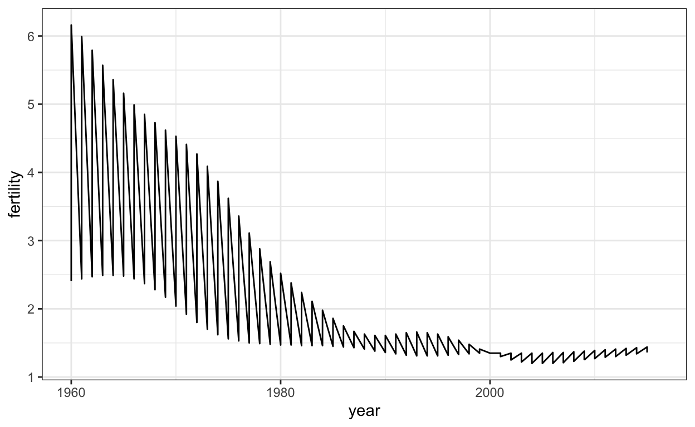
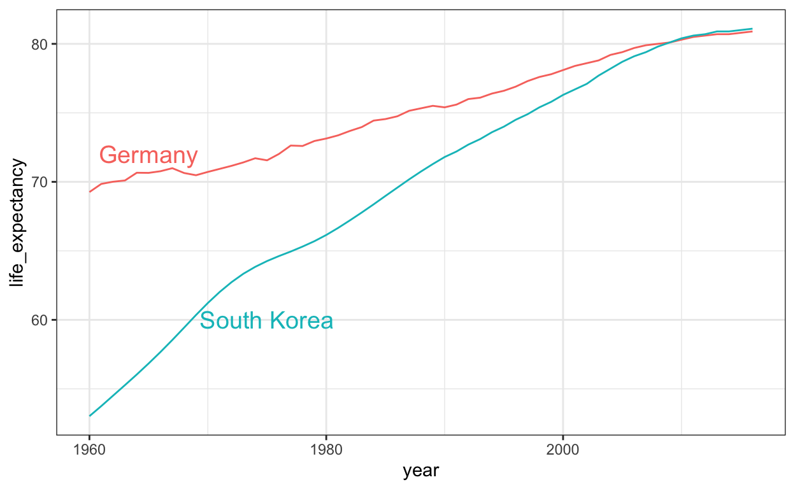
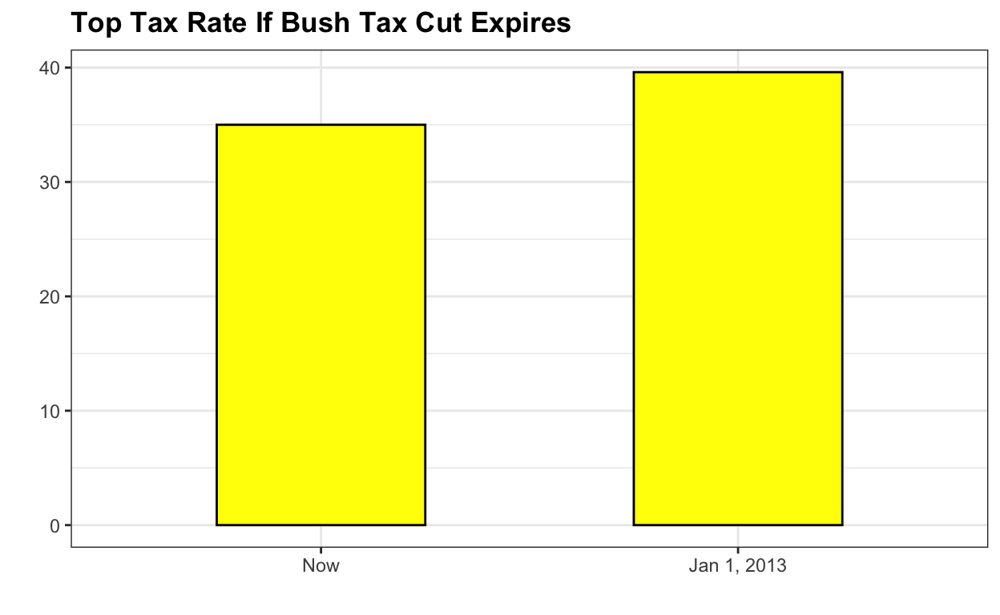
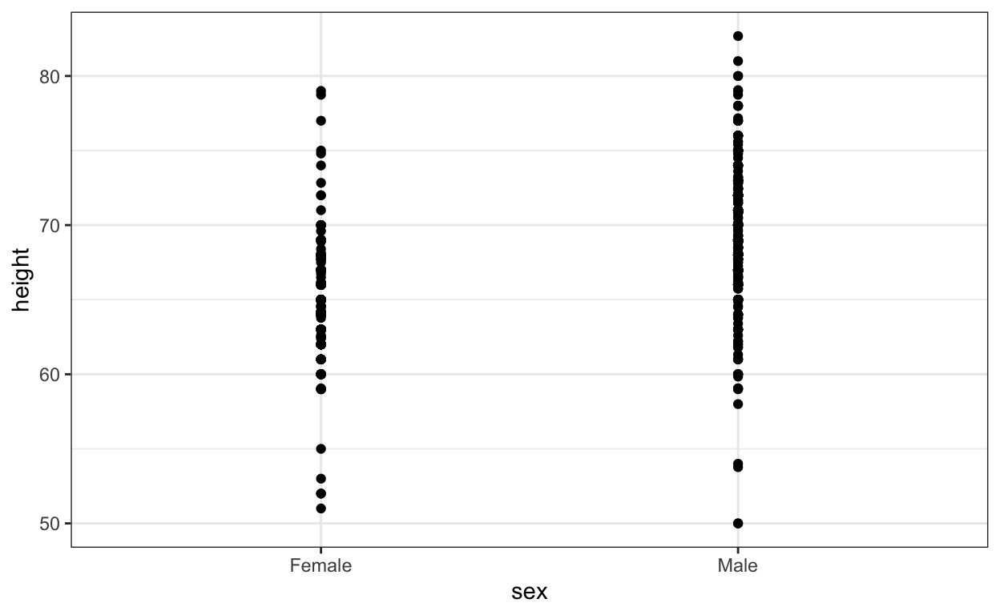

datsci_02: Data Visualization
Introduction and Welcome!

Usage: This tutorial accompanies the textbook Introduction to Data Science by Prof Rafael Irizarry. It contains material from the textbook which is offered under a Attribution-NonCommercial-ShareAlike 4.0 International (CC BY-NC-SA 4.0).
Welcome to the Data Science: Visualization Course!
We’re excited to have you join us in this course, which is designed to teach you data visualization techniques to communicate data-driven findings.
This is the second in a series of courses in the Introduction to Data Science program. The courses in the program are designed to prepare you to do data analysis in , from simple computations to machine learning. If you need a refresher of some basic , check out Data Science: R Basics, the first course in this series.
This course assumes you are comfortable with basic math, algebra, and logical operations. We have some assignments in that allow you to program directly in a browser-based interface. You will further have access to additional exercises to be completed on your local installation of .
Using a combination of a guided introduction lectures and more independent in-depth exploration, you will get to practice your new skills on real-life applications.
The growing availability of informative datasets and software tools has led to increased reliance on data visualizations across many industries, academia, and government. Data visualization provides a powerful way to communicate data-driven findings, motivate analyses, or detect flaws. In this course, you will learn the basics of data visualization and exploratory data analysis. We will use three motivating examples and ggplot2, a data visualization package for the statistical programming language , to code. To learn the very basics, we will start with a somewhat artificial example: heights reported by students. Then we will explore two case studies related to world health and economics and another in infectious disease trends in the United States. It is also important to note that mistakes, biases, systematic errors, and other unexpected problems often lead to data that should be handled with care. The fact that it can be difficult or impossible to notice an error just from the reported results makes data visualization particularly important. This course will explore how failure to discover these problems often leads to flawed analyses and false discoveries.
In this course, you will learn:
- Data visualization principles to better communicate data-driven findings
- How to use ggplot2 to create custom plots
- The weaknesses of several widely used plots and why you should avoid them
Course overview
Section 1: Introduction to Data Visualization and Distributions
- You will get started with data visualization and distributions in .
Section 2: Introduction to ggplot2
- You will learn how to use the ggplot2 package to create plots.
Section 3: Summarizing with dplyr
- You will learn how to summarize data using the dplyr package.
Section 4: Gapminder
- You will see examples of ggplot2 and dplyr in action with the Gapminder dataset.
Section 5: Data Visualization Principles
- You will learn general principles to guide you in developing effective data visualizations.
Meet the Course Instructor

Fatih Uenal is currenlty a Visitng Postdoctoral Researcher at the University of Cambridge, Department of Psychology, where he conducts research on the psychology of anthropocentrism and social and ecological dominance. Prior to his current position, he has worked as a postdoc at Harvard University. Together with Prof Rafael Irizarry he programmed this interactive tutorial based on the the textbook Introduction to Data Science. This interactive tutorial is developed using the learnr package. It has a general social scientists audience in mind and is suited for undergrad and graduate levels of study.
Essential Course Information
Course Objectives
“Data science” is a catch-all term used to describe the practice of working with and analyzing messy data sources to draw meaningful conclusions using techniques developed by computer scientists and computational statisticians. The purpose of this course is to give students who are training as quantitative social scientists a broad introduction to this skillset via the statistical programming language, . You will learn how to conduct many statistical analyses such as univariate statistics (e.g., ANOVA, correlation, regression) in that you may have already done in SPSS, Excel, or another such program. Additionally, we will build on this foundation to explore new skillsets uncommon in the social sciences, such as natural language processing, automated data curation, and machine learning.
At the end of this course you will be able to:
To answer research questions in Social Sciences (e.g., Psychology) with data
Understand the basics of research designs in Social Sciences, and how they relate to data-analysis strategies
Develop an intuitive, practical, and conceptual understanding of strategies for asking and answering questions with data
To use , a free and open-source statistics software program.
Develop a basic understanding of frequently used Data Science Techniques.
Practice your newly acquired skills with interesting, interactive, and fun projects.
NOTE: The schedule and procedures described in this syllabus are subject to change depending on specific needs and requirements. You will always be notified of changes on the homepage (see “last update”).
Course Structure
This is the first module in a series of a 8 week-intensive course. and I suggest that you devote approx 10 hours a week to learning , or if you are teaching graduate students, I’d recommend adopting the schedule below, which is designed for an intense but doable semester-long course, one module per week. It is intended to take the average graduate student roughly 10 hours per week to complete all required tasks.However, some number of students will find programming to be more challenging and may take up to 15 hours per week. Some will breeze through the material in 5.
Grading
Each Monday, lessons will be assigned from datacamp.com. Some of these lessons will be complete DataCamp courses, and others will be specific modules of courses. This will all be managed by assigning content to your (free) DataCamp account. The amount of content assigned will vary between one and two courses of content. DataCamp considers a course to be roughly 4 hours of lessons, which includes practice time. Realistically, the time you need will depend upon how intuitive you find to be. For students already familiar with other programming languages and those with previous experience, “8 hours” of courses is realistically closer to 2 hours; for complete novices that also find the material difficult, 8 hours is a realistic estimate. It is strongly recommended that you stretch out DataCamp lessons across the assignment period, for example, allocating 1 hour each day. You will gain the most by treating this as a foreign language immersion course by using R every day, including for your own research. Remember that you can always go to the Slack Group for help.
Passing Rate
The passing rate is 70%.
Pre-Course Survey
Insert Survey Link here
If you cannot see the survey above, click this link to access it in a new window.
Section 1: Introduction Data Visualization
Section 1 introduces you to Data Visualization and Distributions.
In Section 1, you will learn to:
- understand the importance of data visualization for communicating data-driven findings.
- be able to use distributions to summarize data.
- be able to use the average and the standard deviation to understand the normal distribution.
- be able to assess how well a normal distribution fits the data using a quantile-quantile plot.
- be able to interpret data from a boxplot.
There are 5 assignments that use the DataCamp platform for you to practice your coding skills.
We encourage you to use to interactively test out your answers and further your learning.
Section 1: Introduction to Data Visualization
Textbook link The contents are discussed within the textbook section 6. Introduction to data visualization.
1.1.1 Introduction to Data Visualization
Looking at the numbers and character strings that define a dataset is rarely useful. To convince yourself, print and stare at the US murders data table:
library(dslabs)
data(murders)
head(murders)What do you learn from staring at this table? How quickly can you determine which states have the largest populations? Which states have the smallest? How large is a typical state? Is there a relationship between population size and total murders? How do murder rates vary across regions of the country? For most human brains, it is quite difficult to extract this information just by looking at the numbers. In contrast, the answer to all the questions above are readily available from examining this plot:
We are reminded of the saying “a picture is worth a thousand words”. Data visualization provides a powerful way to communicate a data-driven finding. In some cases, the visualization is so convincing that no follow-up analysis is required.
The growing availability of informative datasets and software tools has led to increased reliance on data visualizations across many industries, academia, and government. A salient example is news organizations, which are increasingly embracing data journalism and including effective infographics as part of their reporting.
A particularly effective example is a Wall Street Journal article showing data related to the impact of vaccines on battling infectious diseases. One of the graphs shows measles cases by US state through the years with a vertical line demonstrating when the vaccine was introduced.
Another striking example comes from a New York Times chart, which summarizes scores from the NYC Regents Exams. As described in the article, these scores are collected for several reasons, including to determine if a student graduates from high school. In New York City you need a 65 to pass. The distribution of the test scores forces us to notice something somewhat problematic:
{kind=link}
The most common test score is the minimum passing grade, with very few scores just below the threshold. This unexpected result is consistent with students close to passing having their scores bumped up.
This is an example of how data visualization can lead to discoveries which would otherwise be missed if we simply subjected the data to a battery of data analysis tools or procedures. Data visualization is the strongest tool of what we call exploratory data analysis (EDA). John W. Tukey, considered the father of EDA, once said,
“The greatest value of a picture is when it forces us to notice what we never expected to see.”
Many widely used data analysis tools were initiated by discoveries made via EDA. EDA is perhaps the most important part of data analysis, yet it is one that is often overlooked.
Data visualization is also now pervasive in philanthropic and educational organizations. In the talks New Insights on Poverty and The Best Stats You’ve Ever Seen, Hans Rosling forces us to notice the unexpected with a series of plots related to world health and economics. In his videos, he uses animated graphs to show us how the world is changing and how old narratives are no longer true.
It is also important to note that mistakes, biases, systematic errors and other unexpected problems often lead to data that should be handled with care. Failure to discover these problems can give rise to flawed analyses and false discoveries. As an example, consider that measurement devices sometimes fail and that most data analysis procedures are not designed to detect these. Yet these data analysis procedures will still give you an answer. The fact that it can be difficult or impossible to notice an error just from the reported results makes data visualization particularly important.
In this part of the book, we will learn the basics of data visualization and exploratory data analysis by using three motivating examples. We will use the ggplot2 package to code. To learn the very basics, we will start with a somewhat artificial example: heights reported by students. Then we will cover the two examples mentioned above: 1) world health and economics and 2) infectious disease trends in the United States.
Of course, there is much more to data visualization than what we cover here. The following are references for those who wish to learn more:
- ER Tufte (1983) The visual display of quantitative information. Graphics Press.
- ER Tufte (1990) Envisioning information. Graphics Press.
- ER Tufte (1997) Visual explanations. Graphics Press.
- WS Cleveland (1993) Visualizing data. Hobart Press.
- WS Cleveland (1994) The elements of graphing data. CRC Press.
- A Gelman, C Pasarica, R Dodhia (2002) Let’s practice what we preach: Turning tables into graphs. The American Statistician 56:121-130.
- NB Robbins (2004) Creating more effective graphs. Wiley.
- A Cairo (2013) The functional art: An introduction to information graphics and visualization. New Riders.
- N Yau (2013) Data points: Visualization that means something. Wiley.
We also do not cover interactive graphics, a topic that is too advanced for this book. Some useful resources for those interested in learning more can be found below:
Key points:
- Plots of data easily communicate information that is difficult to extract from tables of raw values.
- Data visualization is a key component of exploratory data analysis (EDA), in which the properties of data are explored through visualization and summarization techniques.
- Data visualization can help discover biases, systematic errors, mistakes and other unexpected problems in data before those data are incorporated into potentially flawed analysis.
- This course covers the basics of data visualization and EDA in R using the ggplot2 package and motivating examples from world health, economics and infectious disease.
1.1.2 Introduction to Distributions
Textbook link The contents are discussed within the textbook section 8. Visualizing data distributions.
You may have noticed that numerical data is often summarized with the average value. For example, the quality of a high school is sometimes summarized with one number: the average score on a standardized test. Occasionally, a second number is reported: the standard deviation. For example, you might read a report stating that scores were 680 plus or minus 50 (the standard deviation). The report has summarized an entire vector of scores with just two numbers. Is this appropriate? Is there any important piece of information that we are missing by only looking at this summary rather than the entire list?
Our first data visualization building block is learning to summarize lists of factors or numeric vectors. More often than not, the best way to share or explore this summary is through data visualization. The most basic statistical summary of a list of objects or numbers is its distribution. Once a vector has been summarized as a distribution, there are several data visualization techniques to effectively relay this information.
In this module, we first discuss properties of a variety of distributions and how to visualize distributions using a motivating example of student heights. We then discuss the ggplot2 geometries for these visualizations in an upcoming module (other-geometries).
Key points:
The most basic statistical summary of a list of objects is its distribution.
We will learn ways to visualize and analyze distributions in the upcoming sections.
In some cases, data can be summarized by a two-number summary: the average and standard deviation. We will learn to use data visualization to determine when that is appropriate.
1.1.3 Data Types
We will be working with two types of variables: categorical and numeric. Each can be divided into two other groups: categorical can be ordinal or not, whereas numerical variables can be discrete or continuous.
When each entry in a vector comes from one of a small number of groups, we refer to the data as categorical data. Two simple examples are sex (male or female) and regions (Northeast, South, North Central, West). Some categorical data can be ordered even if they are not numbers per se, such as spiciness (mild, medium, hot). In statistics textbooks, ordered categorical data are referred to as ordinal data.
Examples of numerical data are population sizes, murder rates, and heights. Some numerical data can be treated as ordered categorical. We can further divide numerical data into continuous and discrete. Continuous variables are those that can take any value, such as heights, if measured with enough precision. For example, a pair of twins may be 68.12 and 68.11 inches, respectively. Counts, such as population sizes, are discrete because they have to be round numbers.
Keep in mind that discrete numeric data can be considered ordinal. Although this is technically true, we usually reserve the term ordinal data for variables belonging to a small number of different groups, with each group having many members. In contrast, when we have many groups with few cases in each group, we typically refer to them as discrete numerical variables. So, for example, the number of packs of cigarettes a person smokes a day, rounded to the closest pack, would be considered ordinal, while the actual number of cigarettes would be considered a numerical variable. But, indeed, there are examples that can be considered both numerical and ordinal when it comes to visualizing data.
Key points:
- Categorical data are variables that are defined by a small number of groups.
- Ordinal categorical data have an inherent order to the categories (mild/medium/hot, for example).
- Non-ordinal categorical data have no order to the categories.
- Numerical data take a variety of numeric values.
- Continuous variables can take any value.
- Discrete variables are limited to sets of specific values.
1.1 Assessment: Data Types
Insert assessment here
1.2 Describe Heights to ET
Textbook link The contents are discussed within the textbook sections 8.2 Case study of describing student heights trough textbook section - 8.5 Histograms.
Here we introduce a new motivating problem. It is an artificial one, but it will help us illustrate the concepts needed to understand distributions.
Pretend that we have to describe the heights of our classmates to ET, an extraterrestrial that has never seen humans. As a first step, we need to collect data. To do this, we ask students to report their heights in inches. We ask them to provide sex information because we know there are two different distributions by sex. We collect the data and save it in the heights data frame:
library(tidyverse)
library(dslabs)
data(heights)One way to convey the heights to ET is to simply send him this list of 1050 heights. But there are much more effective ways to convey this information, and understanding the concept of a distribution will help. To simplify the explanation, we first focus on male heights. We examine the female height data in Section on “student heights”.
1.2.1 Distribution function
It turns out that, in some cases, the average and the standard deviation are pretty much all we need to understand the data. We will learn data visualization techniques that will help us determine when this two number summary is appropriate. These same techniques will serve as an alternative for when two numbers are not enough.
The most basic statistical summary of a list of objects or numbers is its distribution. The simplest way to think of a distribution is as a compact description of a list with many entries. This concept should not be new for readers of this book. For example, with categorical data, the distribution simply describes the proportion of each unique category. The sex represented in the heights dataset is:
##
## Female Male
## 0.2266667 0.7733333This two-category frequency table is the simplest form of a distribution. We don’t really need to visualize it since one number describes everything we need to know: 23% are females and the rest are males. When there are more categories, then a simple barplot describes the distribution. Here is an example with US state regions:
This particular plot simply shows us four numbers, one for each category. We usually use barplots to display a few numbers. Although this particular plot does not provide much more insight than a frequency table itself, it is a first example of how we convert a vector into a plot that succinctly summarizes all the information in the vector. When the data is numerical, the task of displaying distributions is more challenging.
Key points:
A distribution is a function or description that shows the possible values of a variable and how often those values occur.
For categorical variables, the distribution describes the proportions of each category.
A frequency table is the simplest way to show a categorical distribution. Use
prop.table()to convert a table of counts to a frequency table. Barplots display the distribution of categorical variables and are a way to visualize the information in frequency tables.For continuous numerical data, reporting the frequency of each unique entry is not an effective summary as many or most values are unique. Instead, a distribution function is required.
The cumulative distribution function (CDF) is a function that reports the proportion of data below a value ùëé for all values of a: \(F(a)=\mbox{Pr}(x \leq a)\).
The proportion of observations between any two values ùëé and ùëè can be computed from the CDF as \(F(b) - F(a)\).
A histogram divides data into non-overlapping bins of the same size and plots the counts of number of values that fall in that interval.
1.2.2 Cumulative distribution functions
Numerical data that are not categorical also have distributions. In general, when data is not categorical, reporting the frequency of each entry is not an effective summary since most entries are unique. In our case study, while several students reported a height of 68 inches, only one student reported a height of 68.503937007874 inches and only one student reported a height 68.8976377952756 inches. We assume that they converted from 174 and 175 centimeters, respectively.
Statistics textbooks teach us that a more useful way to define a distribution for numeric data is to define a function that reports the proportion of the data below \(a\) for all possible values of \(a\). This function is called the cumulative distribution function (CDF). In statistics, the following notation is used:
\[ F(a) = \mbox{Pr}(x \leq a) \]
Here is a plot of \(F\) for the male height data:
Similar to what the frequency table does for categorical data, the CDF defines the distribution for numerical data. From the plot, we can see that 16% of the values are below 65, since \(F(66)=\) 0.1637931, or that 84% of the values are below 72, since \(F(72)=\) 0.841133, and so on. In fact, we can report the proportion of values between any two heights, say \(a\) and \(b\), by computing \(F(b) - F(a)\). This means that if we send this plot above to ET, he will have all the information needed to reconstruct the entire list. Paraphrasing the expression “a picture is worth a thousand words”, in this case, a picture is as informative as 812 numbers.
A final note: because CDFs can be defined mathematically the word empirical is added to make the distinction when data is used. We therefore use the term empirical CDF (eCDF).
1.2.3 Histograms
Although the CDF concept is widely discussed in statistics textbooks, the plot is actually not very popular in practice. The main reason is that it does not easily convey characteristics of interest such as: at what value is the distribution centered? Is the distribution symmetric? What ranges contain 95% of the values? Histograms are much preferred because they greatly facilitate answering such questions. Histograms sacrifice just a bit of information to produce plots that are much easier to interpret.
The simplest way to make a histogram is to divide the span of our data into non-overlapping bins of the same size. Then, for each bin, we count the number of values that fall in that interval. The histogram plots these counts as bars with the base of the bar defined by the intervals. Here is the histogram for the height data splitting the range of values into one inch intervals: \((49.5, 50.5],(50.5, 51.5],(51.5,52.5],(52.5,53.5],...,(82.5,83.5]\)
As you can see in the figure above, a histogram is similar to a barplot, but it differs in that the x-axis is numerical, not categorical.
If we send this plot to ET, he will immediately learn some important properties about our data. First, the range of the data is from 50 to 84 with the majority (more than 95%) between 63 and 75 inches. Second, the heights are close to symmetric around 69 inches. Also, by adding up counts, ET could obtain a very good approximation of the proportion of the data in any interval. Therefore, the histogram above is not only easy to interpret, but also provides almost all the information contained in the raw list of 812 heights with about 30 bin counts.
What information do we lose? Note that all values in each interval are treated the same when computing bin heights. So, for example, the histogram does not distinguish between 64, 64.1, and 64.2 inches. Given that these differences are almost unnoticeable to the eye, the practical implications are negligible and we were able to summarize the data to just 23 numbers.
We discuss how to code histograms in Section “other-geometries”.
1.2.4 Cumulative Distribution Function
Every continuous distribution has a cumulative distribution function (CDF). The CDF defines the proportion of the data below a given value ùëé for all values of ùëé:
\[F(a)=\mbox{Pr}(x \leq a)\]
Any continuous dataset has a CDF, not only normal distributions. For example, the male heights data we used in the previous section has this CDF:

This plot of the CDF for male heights has height values “a” on the x-axis and the proportion of students with heights of that value or lower on the y-axis.
As defined above, this plot of the CDF for male heights has height values \(a\) ùëé on the x-axis and the proportion of students with heights of that value or lower \(F(a)\) on the y-axis.
The CDF is essential for calculating probabilities related to continuous data. In a continuous dataset, the probability of a specific exact value is not informative because most entries are unique. For example, in the student heights data, only one individual reported a height of 68.8976377952726 inches, but many students rounded similar heights to 69 inches. If we computed exact value probabilities, we would find that being exactly 69 inches is much more likely than being a non-integer exact height, which does not match our understanding that height is continuous. We can instead use the CDF to obtain a useful summary, such as the probability that a student is between 68.5 and 69.5 inches.
For datasets that are not normal, the CDF can be calculated manually by defining a function to compute the probability above. This function can then be applied to a range of values across the range of the dataset to calculate a CDF. Given a dataset my_data, the CDF can be calculated and plotted like this:
a <- seq(min(my_data), max(my_data), length = 100) # define range of values spanning the dataset
cdf_function <- function(x) { # computes prob. for a single value
mean(my_data <= x)
}
cdf_values <- sapply(a, cdf_function)
plot(a, cdf_values)The CDF defines that proportion of data below a cutoff ùëé. To define the proportion of values above ùëé, we compute:
\[1-F(a)\]
To define the proportion of values between ùëé and ùëè, we compute:
\[F(b)-F(a)\]
Note that the CDF can help compute probabilities. The probability of observing a randomly chosen value between \(a\) and \(b\) is equal to the proportion of values between \(a\) and \(b\), which we compute with the CDF.
1.2.5 Smooth Density Plots
Smooth density plots are aesthetically more appealing than histograms. Here is what a smooth density plot looks like for our heights data:
In this plot, we no longer have sharp edges at the interval boundaries and many of the local peaks have been removed. Also, the scale of the y-axis changed from counts to density.
To understand the smooth densities, we have to understand estimates, a topic we don’t cover until later. However, we provide a heuristic explanation to help you understand the basics so you can use this useful data visualization tool.
The main new concept you must understand is that we assume that our list of observed values is a subset of a much larger list of unobserved values. In the case of heights, you can imagine that our list of 812 male students comes from a hypothetical list containing all the heights of all the male students in all the world measured very precisely. Let’s say there are 1,000,000 of these measurements. This list of values has a distribution, like any list of values, and this larger distribution is really what we want to report to ET since it is much more general. Unfortunately, we don’t get to see it.
However, we make an assumption that helps us perhaps approximate it. If we had 1,000,000 values, measured very precisely, we could make a histogram with very, very small bins. The assumption is that if we show this, the height of consecutive bins will be similar. This is what we mean by smooth: we don’t have big jumps in the heights of consecutive bins. Below we have a hypothetical histogram with bins of size 1:
The smaller we make the bins, the smoother the histogram gets. Here are the histograms with bin width of 1, 0.5, and 0.1:
The smooth density is basically the curve that goes through the top of the histogram bars when the bins are very, very small. To make the curve not depend on the hypothetical size of the hypothetical list, we compute the curve on frequencies rather than counts:
Now, back to reality. We don’t have millions of measurements. Instead, we have 812 and we can’t make a histogram with very small bins.
We therefore make a histogram, using bin sizes appropriate for our data and computing frequencies rather than counts, and we draw a smooth curve that goes through the tops of the histogram bars. The following plots demonstrate the steps that lead to a smooth density:
However, remember that smooth is a relative term. We can actually control the smoothness of the curve that defines the smooth density through an option in the function that computes the smooth density curve. Here are two examples using different degrees of smoothness on the same histogram:
We need to make this choice with care as the resulting visualizations can change our interpretation of the data. We should select a degree of smoothness that we can defend as being representative of the underlying data. In the case of height, we really do have reason to believe that the proportion of people with similar heights should be the same. For example, the proportion that is 72 inches should be more similar to the proportion that is 71 than to the proportion that is 78 or 65. This implies that the curve should be pretty smooth; that is, the curve should look more like the example on the right than on the left.
While the histogram is an assumption-free summary, the smoothed density is based on some assumptions.
1.2.5.1 Interpreting the y-axis
Note that interpreting the y-axis of a smooth density plot is not straightforward. It is scaled so that the area under the density curve adds up to 1. If you imagine we form a bin with a base 1 unit in length, the y-axis value tells us the proportion of values in that bin. However, this is only true for bins of size 1. For other size intervals, the best way to determine the proportion of data in that interval is by computing the proportion of the total area contained in that interval. For example, here are the proportion of values between 65 and 68:

The proportion of this area is about 0.3, meaning that about 30% of male heights are between 65 and 68 inches.
By understanding this, we are ready to use the smooth density as a summary. For this dataset, we would feel quite comfortable with the smoothness assumption, and therefore with sharing this aesthetically pleasing figure with ET, which he could use to understand our male heights data:

1.2.5.2 Densities permit stratification
As a final note, we point out that an advantage of smooth densities over histograms for visualization purposes is that densities make it easier to compare two distributions. This is in large part because the jagged edges of the histogram add clutter. Here is an example comparing male and female heights:
With the right argument, ggplot automatically shades the intersecting region with a different color. We will show examples of ggplot2 code for densities in the Book (Section - 9 Data visualization in practice) as well as (Section - 8.16 ggplot2 geometries).
Key points:
Smooth density plots can be thought of as histograms where the bin width is extremely or infinitely small. The smoothing function makes estimates of the true continuous trend of the data given the available sample of data points.
The degree of smoothness can be controlled by an argument in the plotting function. (We will learn functions for plotting later.)
While the histogram is an assumption-free summary, the smooth density plot is shaped by assumptions and choices you make as a data analyst.
The y-axis is scaled so that the area under the density curve sums to 1. This means that interpreting values on the y-axis is not straightforward. To determine the proportion of data in between two values, compute the area under the smooth density curve in the region between those values.
An advantage of smooth densities over histograms is that densities are easier to compare visually.
A further note on histograms
Note that the choice of binwidth has a determinative effect on shape. There is no “correct” choice for binwidth, and you can sometimes gain insights into the data by experimenting with binwidths.
1.2 Assessment: Distributions
Insert assessment here
1.2.6 Normal Distribution
Histograms and density plots provide excellent summaries of a distribution. But can we summarize even further? We often see the average and standard deviation used as summary statistics: a two-number summary! To understand what these summaries are and why they are so widely used, we need to understand the normal distribution.
The normal distribution, also known as the bell curve and as the Gaussian distribution, is one of the most famous mathematical concepts in history. A reason for this is that approximately normal distributions occur in many situations, including gambling winnings, heights, weights, blood pressure, standardized test scores, and experimental measurement errors. There are explanations for this, but we describe these later. Here we focus on how the normal distribution helps us summarize data.
Rather than using data, the normal distribution is defined with a mathematical formula. For any interval \((a,b)\), the proportion of values in that interval can be computed using this formula:
\[\mbox{Pr}(a < x < b) = \int_a^b \frac{1}{\sqrt{2\pi}s} e^{-\frac{1}{2}\left( \frac{x-m}{s} \right)^2} \, dx\]
You don’t need to memorize or understand the details of the formula. But note that it is completely defined by just two parameters: \(m\) and \(s\). The rest of the symbols in the formula represent the interval ends that we determine, \(a\) and \(b\), and known mathematical constants \(\pi\) and \(e\). These two parameters, \(m\) and \(s\), are referred to as the average (also called the mean) and the standard deviation (SD) of the distribution, respectively.
The distribution is symmetric, centered at the average, and most values (about 95%) are within 2 SDs from the average. Here is what the normal distribution looks like when the average is 0 and the SD is 1:
The fact that the distribution is defined by just two parameters implies that if a dataset is approximated by a normal distribution, all the information needed to describe the distribution can be encoded in just two numbers: the average and the standard deviation. We now define these values for an arbitrary list of numbers.
For a list of numbers contained in a vector x, the average is defined as:
m <- sum(x) / length(x)and the SD is defined as:
s <- sqrt(sum((x-mu)^2) / length(x))which can be interpreted as the average distance between values and their average.
Let’s compute the values for the height for males which we will store in the object \(x\):
index <- heights$sex == "Male"
x <- heights$height[index]The pre-built functions mean and sd (note that for reasons explained in the textbook (Section - 16.2 Data-driven models), sd divides by length(x)-1 rather than length(x)) can be used here:
m <- mean(x)
s <- sd(x)
c(average = m, sd = s)## average sd
## 69.314755 3.611024Here is a plot of the smooth density and the normal distribution with mean = 69.3 and SD = 3.6 plotted as a black line with our student height smooth density in blue:
The normal distribution does appear to be quite a good approximation here. We now will see how well this approximation works at predicting the proportion of values within intervals.
Key points:
- The normal distribution:
- Is centered around one value, the mean
- Is symmetric around the mean
- Is defined completely by its mean (\(\mu\)) and standard deviation (\(\sigma\))
- Always has the same proportion of observations within a given distance of the mean (for example, 95% within 2 \(\sigma\))
- The standard deviation is the average distance between a value and the mean value.
- Calculate the mean using the
mean()function. - Calculate the standard deviation using the
sd()function or manually. - Compute standard units with the
scale()function. - Important: to calculate the proportion of values that meet a certain condition, use the
mean()function on a logical vector. BecauseTRUEis converted to 1 andFALSEis converted to 0, taking the mean of this vector yields the proportion ofTRUE.
1.2.7 Normal Distribution: Standard Units and Z-scores
Standard units
For data that are approximately normal, standard units describe the number of standard deviations an observation is from the mean. Standard units are denoted by the variable \(z\) and are also known as z-scores.
For any value \(x\) from a normal distribution with mean \(\mu\) and standard deviation \(\sigma\), the value in standard units is:
\[ùëß= \frac{x-ùúá}{ùúé}\] Standard units are useful for many reasons. Note that the formula for the normal distribution is simplified by substituting \(z\) in the exponent:
\[\mbox{Pr}(a < x < b) = \int_a^b \frac{1}{\sqrt{2\piùúé}} e^{-\frac{1}{2}z^2} \, dx\]
When \(z=0\), the normal distribution is at a maximum, the mean \(\mu\). The function is defined to be symmetric around \(z=0\).
The normal distribution of z-scores is called the standard normal distribution and is defined by \(\mu=0\) and \(\sigma=1\).
Z-scores are useful to quickly evaluate whether an observation is average or extreme. Z-scores near 0 are average. Z-scores above 2 or below -2 are significantly above or below the mean, and z-scores above 3 or below -3 are extremely rare.
We will learn more about benchmark z-score values and their corresponding probabilities below.
Code: Converting to standard units
The scale function converts a vector of approximately normally distributed values into z-scores.
z <- scale(x)You can compute the proportion of observations that are within 2 standard deviations of the mean like this:
mean(abs(z) < 2)The 68-95-99.7 Rule
The normal distribution is associated with the 68-95-99.7 rule. This rule describes the probability of observing events within a certain number of standard deviations of the mean.

The probability distribution function for the normal distribution is defined such that:
- About 68% of observations will be within one standard deviation of the mean (\(\mu\pm\sigma\)). In standard units, this is equivalent to a z-score of \(∣z∣\leq1\).
- About 95% of observations will be within two standard deviations of the mean (\(\mu\pm2\sigma\)). In standard units, this is equivalent to a z-score of \(∣z∣\leq2\).
- About 99.7% of observations will be within three standard deviations of the mean (\(\mu\pm3\sigma\)). In standard units, this is equivalent to a z-score of \(∣z∣\leq3\).

- We will learn how to compute these exact probabilities in a later section, as well as probabilities for other intervals.
1.2.8 The Normal CDF and pnorm
Textbook link The contents are discussed within the textbook section - 13 Probability.
Theoretical continuous distributions
In the Data Visualization Module we introduced the normal distribution as a useful approximation to many naturally occurring distributions, including that of height. The cumulative distribution for the normal distribution is defined by a mathematical formula which in R can be obtained with the function pnorm. We say that a random quantity is normally distributed with average m and standard deviation s if its probability distribution is defined by:
F(a) = pnorm(a, m, s)This is useful because if we are willing to use the normal approximation for, say, height, we don’t need the entire dataset to answer questions such as: what is the probability that a randomly selected student is taller then 70 inches? We just need the average height and standard deviation:
m <- mean(x)
s <- sd(x)
1 - pnorm(70.5, m, s)## [1] 0.371369Theoretical distributions as approximations
The normal distribution is derived mathematically: we do not need data to define it. For practicing data scientists, almost everything we do involves data. Data is always, technically speaking, discrete. For example, we could consider our height data categorical with each specific height a unique category. The probability distribution is defined by the proportion of students reporting each height. Here is a plot of that probability distribution:
While most students rounded up their heights to the nearest inch, others reported values with more precision. One student reported his height to be 69.6850393700787, which is 177 centimeters. The probability assigned to this height is 0.0012315 or 1 in 812. The probability for 70 inches is much higher at 0.1059113, but does it really make sense to think of the probability of being exactly 70 inches as being different than 69.6850393700787? Clearly it is much more useful for data analytic purposes to treat this outcome as a continuous numeric variable, keeping in mind that very few people, or perhaps none, are exactly 70 inches, and that the reason we get more values at 70 is because people round to the nearest inch.
With continuous distributions, the probability of a singular value is not even defined. For example, it does not make sense to ask what is the probability that a normally distributed value is 70. Instead, we define probabilities for intervals. We thus could ask what is the probability that someone is between 69.5 and 70.5.
In cases like height, in which the data is rounded, the normal approximation is particularly useful if we deal with intervals that include exactly one round number. For example, the normal distribution is useful for approximating the proportion of students reporting values in intervals like the following three:
mean(x <= 68.5) - mean(x <= 67.5)## [1] 0.114532mean(x <= 69.5) - mean(x <= 68.5)## [1] 0.1194581mean(x <= 70.5) - mean(x <= 69.5)## [1] 0.1219212Note how close we get with the normal approximation:
pnorm(68.5, m, s) - pnorm(67.5, m, s) ## [1] 0.1031077pnorm(69.5, m, s) - pnorm(68.5, m, s) ## [1] 0.1097121pnorm(70.5, m, s) - pnorm(69.5, m, s) ## [1] 0.1081743However, the approximation is not as useful for other intervals. For instance, notice how the approximation breaks down when we try to estimate:
mean(x <= 70.9) - mean(x<=70.1)## [1] 0.02216749with
pnorm(70.9, m, s) - pnorm(70.1, m, s)## [1] 0.08359562In general, we call this situation discretization. Although the true height distribution is continuous, the reported heights tend to be more common at discrete values, in this case, due to rounding. As long as we are aware of how to deal with this reality, the normal approximation can still be a very useful tool.
Key points:
- The normal distribution has a mathematically defined CDF which can be computed in R with the function
pnorm(). pnorm(a, avg, s)gives the value of the cumulative distribution function \(F(a)\) for the normal distribution defined by averageavgand standard deviations.- We say that a random quantity is normally distributed with average avg and standard deviation s if the approximation
pnorm(a, avg, s)holds for all values of \(a\). - If we are willing to use the normal approximation for height, we can estimate the distribution simply from the mean and standard deviation of our values.
- If we treat the height data as discrete rather than categorical, we see that the data are not very useful because integer values are more common than expected due to rounding. This is called discretization.
- With rounded data, the normal approximation is particularly useful when computing probabilities of intervals of length 1 that include exactly one integer.
1.2 Assessment: Normal distribution
Insert assessment here
1.3.1 Definition of quantiles
Quantiles are cutoff points that divide a dataset into intervals with set probabilities. The \(q\) th quantile is the value at which \(q\) % of the observations are equal to or less than that value.
Using the quantile function
Given a dataset data and desired quantile q, you can find the qth quantile of data with:
quantile(data,q)Percentiles
Percentiles are the quantiles that divide a dataset into 100 intervals each with 1% probability. You can determine all percentiles of a dataset data like this:
p <- seq(0.01, 0.99, 0.01)
quantile(data, p)Quartiles
Quartiles divide a dataset into 4 parts each with 25% probability. They are equal to the 25th, 50th and 75th percentiles. The 25th percentile is also known as the 1st quartile, the 50th percentile is also known as the median, and the 75th percentile is also known as the 3rd quartile.
The summary() function returns the minimum, quartiles and maximum of a vector.
Examples
Load the heights dataset from the dslabs package:
library(dslabs)
data(heights)Use summary() on the heights$height variable to find the quartiles:
summary(heights$height)Find the percentiles of heights$height:
p <- seq(0.01, 0.99, 0.01)
percentiles <- quantile(heights$height, p)Confirm that the 25th and 75th percentiles match the 1st and 3rd quartiles. Note that quantile() returns a named vector. You can access the 25th and 75th percentiles like this (adapt the code for other percentile values):
percentiles[names(percentiles) == "25%"]
percentiles[names(percentiles) == "75%"]1.3.2 Finding quantiles with qnorm
Definition of qnorm
The qnorm() function gives the theoretical value of a quantile with probability p of observing a value equal to or less than that quantile value given a normal distribution with mean mu and standard deviation sigma:
qnorm(p, mu, sigma)By default, mu=0 and sigma=1. Therefore, calling qnorm() with no arguments gives quantiles for the standard normal distribution.
qnorm(p)Recall that quantiles are defined such that p is the probability of a random observation less than or equal to the quantile.
Relation to pnorm
The pnorm() function gives the probability that a value from a standard normal distribution will be less than or equal to a z-score value z. Consider:
pnorm(-1.96) ≈ 0.025
The result of pnorm() is the quantile. Note that:
qnorm(0.025) ≈ −1.96
qnorm() and pnorm() are inverse functions:
pnorm(qnorm(0.025)) = 0.025
Theoretical quantiles
You can use qnorm() to determine the theoretical quantiles of a dataset: that is, the theoretical value of quantiles assuming that a dataset follows a normal distribution. Run the qnorm() function with the desired probabilities p, mean mu and standard deviation sigma.
Suppose male heights follow a normal distribution with a mean of 69 inches and standard deviation of 3 inches. The theoretical quantiles are:
p <- seq(0.01, 0.99, 0.01)
theoretical_quantiles <- qnorm(p, 69, 3)Theoretical quantiles can be compared to sample quantiles determined with the quantile function in order to evaluate whether the sample follows a normal distribution.
1.3.3 Quantile-Quantile Plots
Textbook link The contents are discussed within the textbook section - 8.10 Quantile-quantile plots.
A systematic way to assess how well the normal distribution fits the data is to check if the observed and predicted proportions match. In general, this is the approach of the quantile-quantile plot (QQ-plot).
First let’s define the theoretical quantiles for the normal distribution. In statistics books we use the symbol \(\Phi(x)\) to define the function that gives us the probability of a standard normal distribution being smaller than \(x\). So, for example, \(\Phi(-1.96) = 0.025\) and \(\Phi(1.96) = 0.975\). In R, we can evaluate \(\Phi\) using the pnorm function:
pnorm(-1.96)## [1] 0.0249979The inverse function \(\Phi^{-1}(x)\) gives us the theoretical quantiles for the normal distribution. So, for example, \(\Phi^{-1}(0.975) = 1.96\). In R, we can evaluate the inverse of \(\Phi\) using the qnorm function.
qnorm(0.975)## [1] 1.959964Note that these calculations are for the standard normal distribution by default (mean = 0, standard deviation = 1), but we can also define these for any normal distribution. We can do this using the mean and sd arguments in the pnorm and qnorm function. For example, we can use qnorm to determine quantiles of a distribution with a specific average and standard deviation
qnorm(0.975, mean = 5, sd = 2)## [1] 8.919928For the normal distribution, all the calculations related to quantiles are done without data, thus the name theoretical quantiles. But quantiles can be defined for any distribution, including an empirical one. So if we have data in a vector \(x\), we can define the quantile associated with any proportion \(p\) as the \(q\) for which the proportion of values below \(q\) is \(p\). Using R code, we can define q as the value for which mean(x <= q) = p. Notice that not all \(p\) have a \(q\) for which the proportion is exactly \(p\). There are several ways of defining the best \(q\) as discussed in the help for the quantile function.
To give a quick example, for the male heights data, we have that:
mean(x <= 69.5)## [1] 0.5147783So about 50% are shorter or equal to 69 inches. This implies that if \(p=0.50\) then \(q=69.5\).
The idea of a QQ-plot is that if your data is well approximated by normal distribution then the quantiles of your data should be similar to the quantiles of a normal distribution. To construct a QQ-plot, we do the following:
1. Define a vector of \(m\) proportions \(p_1, p_2, \dots, p_m\).
2. Define a vector of quantiles \(q_1, \dots, q_m\) for your data for the proportions \(p_1, \dots, p_m\). We refer to these as the sample quantiles.
3. Define a vector of theoretical quantiles for the proportions \(p_1, \dots, p_m\) for a normal distribution with the same average and standard deviation as the data.
4. Plot the sample quantiles versus the theoretical quantiles.
Let’s construct a QQ-plot using R code. Start by defining the vector of proportions.
p <- seq(0.05, 0.95, 0.05)To obtain the quantiles from the data, we can use the quantile function like this:
sample_quantiles <- quantile(x, p)To obtain the theoretical normal distribution quantiles with the corresponding average and SD, we use the qnorm function:
theoretical_quantiles <- qnorm(p, mean = mean(x), sd = sd(x))To see if they match or not, we plot them against each other and draw the identity line:
qplot(theoretical_quantiles, sample_quantiles) + geom_abline()Notice that this code becomes much cleaner if we use standard units:
sample_quantiles <- quantile(z, p)
theoretical_quantiles <- qnorm(p)
qplot(theoretical_quantiles, sample_quantiles) + geom_abline()The above code is included to help describe QQ-plots. However, in practice it is easier to use the ggplot2 code described in the Book (Section - 8.16 ggplot2 geometries):
heights %>% filter(sex == "Male") %>%
ggplot(aes(sample = scale(height))) +
geom_qq() +
geom_abline()While for the illustration above we used 20 quantiles, the default from the geom_qq function is to use as many quantiles as data points.
Key points:
- Quantile-quantile plots, or QQ-plots, are used to check whether distributions are well-approximated by a normal distribution.
- Given a proportion p, the quantile q is the value such that the proportion of values in the data below q is p.
- In a QQ-plot, the sample quantiles in the observed data are compared to the theoretical quantiles expected from the normal distribution. If the data are well-approximated by the normal distribution, then the points on the QQ-plot will fall near the identity line (sample = theoretical).
- Calculate sample quantiles (observed quantiles) using the
quantile()function. - Calculate theoretical quantiles with the
qnorm()function.qnorm()will calculate quantiles for the standard normal distribution (\(\mu=0\), \(\sigma=1\)) by default, but it can calculate quantiles for any normal distribution givenmean()andsd()arguments. We will learn more aboutqnorm()in the probability course. - Note that we will learn alternate ways to make QQ-plots with less code later in the series.
1.3.4 Percentiles
Textbook link The contents are discussed within the textbook section - 8.11 Percentiles.
Before we move on, let’s define some terms that are commonly used in exploratory data analysis.
Percentiles are special cases of quantiles that are commonly used. The percentiles are the quantiles you obtain when setting the \(p\) at \(0.01, 0.02, ..., 0.99\). We call, for example, the case of \(p=0.25\) the 25th percentile, which gives us a number for which 25% of the data is below. The most famous percentile is the 50th, also known as the median.
For the normal distribution the median and average are the same, but this is generally not the case.
Another special case that receives a name are the quartiles, which are obtained when setting \(p=0.25,0.50\), and \(0.75\).
Key points:
- Percentiles are the quantiles obtained when defining ùëù as 0.01,0.02,‚Ķ,0.99. They summarize the values at which a certain percent of the observations are equal to or less than that value.
- The 50th percentile is also known as the median.
- The quartiles are the 25th, 50th and 75th percentiles.
1.3.5 Boxplots
Textbook link The contents are discussed within the textbook section - 8.12 Boxplots.
To introduce boxplots we will go back to the US murder data. Suppose we want to summarize the murder rate distribution. Using the data visualization technique we have learned, we can quickly see that the normal approximation does not apply here:
In this case, the histogram above or a smooth density plot would serve as a relatively succinct summary.
Now suppose those used to receiving just two numbers as summaries ask us for a more compact numerical summary.
Here Tukey offered some advice. Provide a five-number summary composed of the range along with the quartiles (the 25th, 50th, and 75th percentiles). Tukey further suggested that we ignore outliers when computing the range and instead plot these as independent points. We provide a detailed explanation of outliers later. Finally, he suggested we plot these numbers as a “box” with “whiskers” like this:
with the box defined by the 25% and 75% percentile and the whiskers showing the range. The distance between these two is called the interquartile range. The two points are outliers according to Tukey’s definition. The median is shown with a horizontal line. Today, we call these boxplots.
From just this simple plot, we know that the median is about 2.5, that the distribution is not symmetric, and that the range is 0 to 5 for the great majority of states with two exceptions.
We discuss how to make boxplots in the Book (Section - 8.16 ggplot2 geometries).
Key points:
- When data do not follow a normal distribution and cannot be succinctly summarized by only the mean and standard deviation, an alternative is to report a five-number summary: range (ignoring outliers) and the quartiles (25th, 50th, 75th percentile).
- In a boxplot, the box is defined by the 25th and 75th percentiles and the median is a horizontal line through the box. The whiskers show the range excluding outliers, and outliers are plotted separately as individual points.
- The interquartile range is the distance between the 25th and 75th percentiles.
- Boxplots are particularly useful when comparing multiple distributions.
- We discuss outliers in a later section.
1.3 Assessment: Quantiles, percentiles, and boxplots
Insert assessment here
1.4.1 Stratification
In data analysis we often divide observations into groups based on the values of one or more variables associated with those observations. For example in the next section we divide the height values into groups based on a sex variable: females and males. We call this procedure stratification and refer to the resulting groups as strata.
Stratification is common in data visualization because we are often interested in how the distribution of variables differs across different subgroups. We will see several examples throughout this part of the book. We will revisit the concept of stratification when we learn regression in the Book (Section - 17 Regression) and in the Machine Learning part of the book.
1.4 Distribution of Female Heights
Textbook link The contents are discussed within the textbook section - 8.14 Case study: describing student heights (continued).
Case study: describing student heights (continued)
Using the histogram, density plots, and QQ-plots, we have become convinced that the male height data is well approximated with a normal distribution. In this case, we report back to ET a very succinct summary: male heights follow a normal distribution with an average of 69.3 inches and a SD of 3.6 inches. With this information, ET will have a good idea of what to expect when he meets our male students. However, to provide a complete picture we need to also provide a summary of the female heights.
We learned that boxplots are useful when we want to quickly compare two or more distributions. Here are the heights for men and women:
The plot immediately reveals that males are, on average, taller than females. The standard deviations appear to be similar. But does the normal approximation also work for the female height data collected by the survey? We expect that they will follow a normal distribution, just like males. However, exploratory plots reveal that the approximation is not as useful:
We see something we did not see for the males: the density plot has a second “bump”. Also, the QQ-plot shows that the highest points tend to be taller than expected by the normal distribution. Finally, we also see five points in the QQ-plot that suggest shorter than expected heights for a normal distribution. When reporting back to ET, we might need to provide a histogram rather than just the average and standard deviation for the female heights.
However, go back and read Tukey’s quote. We have noticed what we didn’t expect to see. If we look at other female height distributions, we do find that they are well approximated with a normal distribution. So why are our female students different? Is our class a requirement for the female basketball team? Are small proportions of females claiming to be taller than they are? Another, perhaps more likely, explanation is that in the form students used to enter their heights, FEMALE was the default sex and some males entered their heights, but forgot to change the sex variable. In any case, data visualization has helped discover a potential flaw in our data.
Regarding the five smallest values, note that these values are:
heights %>% filter(sex == "Female") %>%
top_n(5, desc(height)) %>%
pull(height)## [1] 51 53 55 52 52Because these are reported heights, a possibility is that the student meant to enter 5'1", 5'2", 5'3" or 5'5".
Key points:
- If a distribution is not normal, it cannot be summarized with only the mean and standard deviation. Provide a histogram, smooth density or boxplot instead.
- A plot can force us to see unexpected results that make us question the quality or implications of our data.
1.4 Assessment: Robust Summaries with Outliers
Insert assessment here
Section 2: Introduction to ggplot2
In Section 2, you will learn how to create data visualizations in using the ggplot2 package.
After completing Section 2, you will:
- be able to use ggplot2 to create data visualizations in .
- be able to explain what the data component of a graph is.
- be able to identify the geometry component of a graph and know when to use which type of geometry.
- be able to explain what the aesthetic mapping component of a graph is.
- be able to understand the scale component of a graph and select an appropriate scale component to use.
There is 1 assignment that uses the DataCamp platform for you to practice your coding skills.
Note that it can be hard to memorize all of the functions and arguments used by ggplot2, so we recommend that you have a cheat sheet handy to help you remember the necessary commands.
We encourage you to use to interactively test out your answers and further your learning.
Section 2: Basics ggplot2
Textbook link The contents are discussed within the textbook section - Chapter 7 ggplot2. We recommend you keep a copy of the ggplot2 cheat sheet handy.
2.1.1 ggplot2
Exploratory data visualization is perhaps the greatest strength of R. One can quickly go from idea to data to plot with a unique balance of flexibility and ease. For example, Excel may be easier than R for some plots, but it is nowhere near as flexible. D3.js may be more flexible and powerful than R, but it takes much longer to generate a plot.
Throughout the book, we will be creating plots using the ggplot2 package.
library(dplyr)
library(ggplot2)Many other approaches are available for creating plots in R. In fact, the plotting capabilities that come with a basic installation of R are already quite powerful. There are also other packages for creating graphics such as grid and lattice. We chose to use ggplot2 in this book because it breaks plots into components in a way that permits beginners to create relatively complex and aesthetically pleasing plots using syntax that is intuitive and comparatively easy to remember.
One reason ggplot2 is generally more intuitive for beginners is that it uses a grammar of graphics, the gg in ggplot2. This is analogous to the way learning grammar can help a beginner construct hundreds of different sentences by learning just a handful of verbs, nouns and adjectives without having to memorize each specific sentence. Similarly, by learning a handful of ggplot2 building blocks and its grammar, you will be able to create hundreds of different plots.
Another reason ggplot2 is easy for beginners is that its default behavior is carefully chosen to satisfy the great majority of cases and is visually pleasing. As a result, it is possible to create informative and elegant graphs with relatively simple and readable code.
One limitation is that ggplot2 is designed to work exclusively with data tables in tidy format (where rows are observations and columns are variables). However, a substantial percentage of datasets that beginners work with are in, or can be converted into, this format. An advantage of this approach is that, assuming that our data is tidy, ggplot2 simplifies plotting code and the learning of grammar for a variety of plots.
To use ggplot2 you will have to learn several functions and arguments. These are hard to memorize, so we highly recommend you have the ggplot2 cheat sheet handy. You can get a copy here: https://www.rstudio.com/wp-content/uploads/2015/03/ggplot2-cheatsheet.pdf or simply perform an internet search for “ggplot2 cheat sheet”.
Key points:
- Throughout the series, we will create plots with the ggplot2 package. ggplot2 is part of the tidyverse suite of packages, which you can load with
library(tidyverse). - Note that you can also load ggplot2 alone using the command
library(ggplot2), instead of loading the entire tidyverse. - ggplot2 uses a grammar of graphics to break plots into building blocks that have intuitive syntax, making it easy to create relatively complex and aesthetically pleasing plots with relatively simple and readable code.
- ggplot2 is designed to work exclusively with tidy data (rows are observations and columns are variables).
2.1.2 Graph Components
We will construct a graph that summarizes the US murders dataset that looks like this:
We can clearly see how much states vary across population size and the total number of murders. Not surprisingly, we also see a clear relationship between murder totals and population size. A state falling on the dashed grey line has the same murder rate as the US average. The four geographic regions are denoted with color, which depicts how most southern states have murder rates above the average.
This data visualization shows us pretty much all the information in the data table. The code needed to make this plot is relatively simple. We will learn to create the plot part by part.
The first step in learning ggplot2 is to be able to break a graph apart into components. Let’s break down the plot above and introduce some of the ggplot2 terminology. The main three components to note are:
- Data: The US murders data table is being summarized. We refer to this as the data component.
- Geometry: The plot above is a scatterplot. This is referred to as the geometry component. Other possible geometries are barplot, histogram, smooth densities, qqplot, and boxplot. We will learn more about these in the Data Visualization part of the book.
- Aesthetic mapping: The plot uses several visual cues to represent the information provided by the dataset. The two most important cues in this plot are the point positions on the x-axis and y-axis, which represent population size and the total number of murders, respectively. Each point represents a different observation, and we map data about these observations to visual cues like x- and y-scale. Color is another visual cue that we map to region. We refer to this as the aesthetic mapping component. How we define the mapping depends on what geometry we are using.
We also note that:
- The points are labeled with the state abbreviations.
- The range of the x-axis and y-axis appears to be defined by the range of the data. They are both on log-scales.
- There are labels, a title, a legend, and we use the style of The Economist magazine.
We will now construct the plot piece by piece.
We start by loading the dataset:
library(dslabs)
data(murders)
Key points:
- Plots in ggplot2 consist of 3 main components:
- Data: The dataset being summarized
- Geometry: The type of plot (scatterplot, boxplot, barplot, histogram, qqplot, smooth density, etc.)
- Aesthetic mapping: Variables mapped to visual cues, such as x-axis and y-axis values and color
- There are additional components:
- Scale
- Labels, Title, Legend
- Theme/Style
2.1.3 Creating a New Plot
The first step in creating a ggplot2 graph is to define a ggplot object. We do this with the function ggplot, which initializes the graph. If we read the help file for this function, we see that the first argument is used to specify what data is associated with this object:
ggplot(data = murders)We can also pipe the data in as the first argument. So this line of code is equivalent to the one above:
murders %>% ggplot()It renders a plot, in this case a blank slate since no geometry has been defined. The only style choice we see is a grey background.
What has happened above is that the object was created and, because it was not assigned, it was automatically evaluated. But we can assign our plot to an object, for example like this:
p <- ggplot(data = murders)
class(p)## [1] "gg" "ggplot"To render the plot associated with this object, we simply print the object p. The following two lines of code each produce the same plot we see above:
print(p)
p
Key points:
- You can associate a dataset x with a ggplot object with any of the 3 commands:
ggplot(data = x)ggplot(x)%>% ggplot()
- You can assign a ggplot object to a variable. If the object is not assigned to a variable, it will automatically be displayed.
- You can display a ggplot object assigned to a variable by printing that variable.
2.2.1 Layers
Textbook link The contents are discussed within the textbook section - 7.3 Geometries, textbook section - 7.4 Aesthetic mappings, and textbook section - 7.5 Layers.
In ggplot2 we create graphs by adding layers. Layers can define geometries, compute summary statistics, define what scales to use, or even change styles. To add layers, we use the symbol +. In general, a line of code will look like this:
DATA %>%
ggplot()+ LAYER 1 + LAYER 2 + … + LAYER N
Usually, the first added layer defines the geometry. We want to make a scatterplot. What geometry do we use?
Taking a quick look at the cheat sheet, we see that the function used to create plots with this geometry is geom_point.
(Image courtesy of RStudio. CC-BY-4.0 license.)
Geometry function names follow the pattern: geom_X where X is the name of the geometry. Some examples include geom_point, geom_bar, and geom_histogram.
For geom_point to run properly we need to provide data and a mapping. We have already connected the object p with the murders data table, and if we add the layer geom_point it defaults to using this data. To find out what mappings are expected, we read the Aesthetics section of the help file geom_point help file:
> Aesthetics
>
> geom_point understands the following aesthetics (required aesthetics are in bold):
>
> x
>
> y
>
> alpha
>
> colourand, as expected, we see that at least two arguments are required x and y.
Layers
A second layer in the plot we wish to make involves adding a label to each point to identify the state. The geom_label and geom_text functions permit us to add text to the plot with and without a rectangle behind the text, respectively.
Because each point (each state in this case) has a label, we need an aesthetic mapping to make the connection between points and labels. By reading the help file, we learn that we supply the mapping between point and label through the label argument of aes. So the code looks like this:
p + geom_point(aes(population/10^6, total)) +
geom_text(aes(population/10^6, total, label = abb))We have successfully added a second layer to the plot.
As an example of the unique behavior of aes mentioned above, note that this call:
p_test <- p + geom_text(aes(population/10^6, total, label = abb))is fine, whereas this call:
p_test <- p + geom_text(aes(population/10^6, total), label = abb) will give you an error since abb is not found because it is outside of the aes function. The layer geom_text does not know where to find abb since it is a column name and not a global variable.
Key points:
- In ggplot2, graphs are created by adding layers to the ggplot object: DATA %>% ggplot() + LAYER_1 + LAYER_2 + … + LAYER_N
- The geometry layer defines the plot type and takes the format geom_X where X is the plot type.
- Aesthetic mappings describe how properties of the data connect with features of the graph (axis position, color, size, etc.) Define aesthetic mappings with the aes() function.
aes()uses variable names from the object component (for example, total rather thanmurders$total).geom_point()creates a scatterplot and requires x and y aesthetic mappings.geom_text()andgeom_label()add text to a scatterplot and require x, y, and label aesthetic mappings.- To determine which aesthetic mappings are required for a geometry, read the help file for that geometry.
- You can add layers with different aesthetic mappings to the same graph.
2.2.2 Tinkering
Textbook link The contents are discussed within the textbook section - 7.5.1 Tinkering with arguments and textbook section - 7.6 Global versus local aesthetic mappings.
Each geometry function has many arguments other than aes and data. They tend to be specific to the function. For example, in the plot we wish to make, the points are larger than the default size. In the help file we see that size is an aesthetic and we can change it like this:
p + geom_point(aes(population/10^6, total), size = 3) +
geom_text(aes(population/10^6, total, label = abb))
size is not a mapping: whereas mappings use data from specific observations and need to be inside aes(), operations we want to affect all the points the same way do not need to be included inside aes.
Now because the points are larger it is hard to see the labels. If we read the help file for geom_text, we see the nudge_x argument, which moves the text slightly to the right or to the left:
p + geom_point(aes(population/10^6, total), size = 3) +
geom_text(aes(population/10^6, total, label = abb), nudge_x = 1.5)This is preferred as it makes it easier to read the text. In the Book (Section - 7.11 Add-on packages) we learn a better way of assuring we can see the points and the labels.
Global versus local aesthetic mappings
In the previous line of code, we define the mapping aes(population/10^6, total) twice, once in each geometry. We can avoid this by using a global aesthetic mapping. We can do this when we define the blank slate ggplot object. Remember that the function ggplot contains an argument that permits us to define aesthetic mappings:
args(ggplot)## function (data = NULL, mapping = aes(), ..., environment = parent.frame())
## NULLIf we define a mapping in ggplot, all the geometries that are added as layers will default to this mapping. We redefine p:
p <- murders %>% ggplot(aes(population/10^6, total, label = abb))and then we can simply write the following code to produce the previous plot:
p + geom_point(size = 3) +
geom_text(nudge_x = 1.5)We keep the size and nudge_x arguments in geom_point and geom_text, respectively, because we want to only increase the size of points and only nudge the labels. If we put those arguments in aes then they would apply to both plots. Also note that the geom_point function does not need a label argument and therefore ignores that aesthetic.
If necessary, we can override the global mapping by defining a new mapping within each layer. These local definitions override the global. Here is an example:
p + geom_point(size = 3) +
geom_text(aes(x = 10, y = 800, label = "Hello there!"))
Clearly, the second call to geom_text does not use population and total.
Key points:
- You can modify arguments to geometry functions other than
aes()and the data. Additional arguments can be found in the documentation for each geometry. - These arguments are not aesthetic mappings: they affect all data points the same way.
- Global aesthetic mappings apply to all geometries and can be defined when you initially call
ggplot(). All the geometries added as layers will default to this mapping. Local aesthetic mappings add additional information or override the default mappings.
2.2.3 Scales, Labels, and Colors
Textbook link The contents are discussed within the textbook section - 7.7 Scales, textbook section - 7.8 Labels and titles, textbook section - 7.9 Categories as colors, and textbook section - 7.10 Annotation, shapes, and adjustments
Scales
First, our desired scales are in log-scale. This is not the default, so this change needs to be added through a scales layer. A quick look at the cheat sheet reveals the scale_x_continuous function lets us control the behavior of scales. We use them like this:
p + geom_point(size = 3) +
geom_text(nudge_x = 0.05) +
scale_x_continuous(trans = "log10") +
scale_y_continuous(trans = "log10") Because we are in the log-scale now, the nudge must be made smaller.
This particular transformation is so common that ggplot2 provides the specialized functions scale_x_log10 and scale_y_log10, which we can use to rewrite the code like this:
p + geom_point(size = 3) +
geom_text(nudge_x = 0.05) +
scale_x_log10() +
scale_y_log10() Labels and titles
Similarly, the cheat sheet quickly reveals that to change labels and add a title, we use the following functions:
p + geom_point(size = 3) +
geom_text(nudge_x = 0.05) +
scale_x_log10() +
scale_y_log10() +
xlab("Populations in millions (log scale)") +
ylab("Total number of murders (log scale)") +
ggtitle("US Gun Murders in 2010")
We are almost there! All we have left to do is add color, a legend, and optional changes to the style.
Categories as colors
We can change the color of the points using the col argument in the geom_point function. To facilitate demonstration of new features, we will redefine p to be everything except the points layer:
p <- murders %>% ggplot(aes(population/10^6, total, label = abb)) +
geom_text(nudge_x = 0.05) +
scale_x_log10() +
scale_y_log10() +
xlab("Populations in millions (log scale)") +
ylab("Total number of murders (log scale)") +
ggtitle("US Gun Murders in 2010")and then test out what happens by adding different calls to geom_point. We can make all the points blue by adding the color argument:
p + geom_point(size = 3, color ="blue")This, of course, is not what we want. We want to assign color depending on the geographical region. A nice default behavior of ggplot2 is that if we assign a categorical variable to color, it automatically assigns a different color to each category and also adds a legend.
Since the choice of color is determined by a feature of each observation, this is an aesthetic mapping. To map each point to a color, we need to use aes. We use the following code:
p + geom_point(aes(col=region), size = 3)The x and y mappings are inherited from those already defined in p, so we do not redefine them. We also move aes to the first argument since that is where mappings are expected in this function call.
Here we see yet another useful default behavior: ggplot2 automatically adds a legend that maps color to region. To avoid adding this legend we set the geom_point argument show.legend = FALSE.
Annotation, shapes, and adjustments
We often want to add shapes or annotation to figures that are not derived directly from the aesthetic mapping; examples include labels, boxes, shaded areas, and lines.
Here we want to add a line that represents the average murder rate for the entire country. Once we determine the per million rate to be \(r\), this line is defined by the formula: \(y = r x\), with \(y\) and \(x\) our axes: total murders and population in millions, respectively. In the log-scale this line turns into: \(\log(y) = \log(r) + \log(x)\). So in our plot it’s a line with slope 1 and intercept \(\log(r)\). To compute this value, we use our dplyr skills:
r <- murders %>%
summarize(rate = sum(total) / sum(population) * 10^6) %>%
pull(rate)To add a line we use the geom_abline function. ggplot2 uses ab in the name to remind us we are supplying the intercept (a) and slope (b). The default line has slope 1 and intercept 0 so we only have to define the intercept:
p + geom_point(aes(col=region), size = 3) +
geom_abline(intercept = log10(r))Here geom_abline does not use any information from the data object.
We can change the line type and color of the lines using arguments. Also, we draw it first so it doesn’t go over our points.
p <- p + geom_abline(intercept = log10(r), lty = 2, color = "darkgrey") +
geom_point(aes(col=region), size = 3) Note that we have redefined p and used this new p below and in the next section.
The default plots created by ggplot2 are already very useful. However, we frequently need to make minor tweaks to the default behavior. Although it is not always obvious how to make these even with the cheat sheet, ggplot2 is very flexible.
For example, we can make changes to the legend via the scale_color_discrete function. In our plot the word region is capitalized and we can change it like this:
p <- p + scale_color_discrete(name = "Region")
Key points:
- Convert the x-axis to log scale with
scale_x_continuous(trans = "log10")orscale_x_log10(). Similar functions exist for the y-axis. - Add axis titles with
xlab()andylab()functions. Add a plot title with theggtitle()function. - Add a color mapping that colors points by a variable by defining the
colargument withinaes(). To color all points the same way, definecoloutside ofaes(). - Add a line with the
geom_abline()geometry.geom_abline()takes arguments “slope” (default = 1) and intercept (default = 0). Change the color withcolorcolorand line type withlty. - Placing the line layer after the point layer will overlay the line on top of the points. To overlay points on the line, place the line layer before the point layer.
- There are many additional ways to tweak your graph that can be found in the ggplot2 documentation, cheat sheet, or on the internet. For example, you can change the legend title with
scale_color_discrete().
2.2.4 Add-on Packages
Textbook link The contents are discussed within the textbook section - 7.11 Add-on packages and textbook section - 7.12 Putting it all together.
The power of ggplot2 is augmented further due to the availability of add-on packages. The remaining changes needed to put the finishing touches on our plot require the ggthemes and ggrepel packages.
The style of a ggplot2 graph can be changed using the theme functions. Several themes are included as part of the ggplot2 package. In fact, for most of the plots in this book, we use a function in the dslabs package that automatically sets a default theme:
ds_theme_set()Many other themes are added by the package ggthemes. Among those are the theme_economist theme that we used. After installing the package, you can change the style by adding a layer like this:
library(ggthemes)
p + theme_economist()You can see how some of the other themes look by simply changing the function. For instance, you might try the theme_fivethirtyeight() theme instead.
The final difference has to do with the position of the labels. In our plot, some of the labels fall on top of each other. The add-on package ggrepel includes a geometry that adds labels while ensuring that they don’t fall on top of each other. We simply change geom_text with geom_text_repel.
2.2.5 Putting it all together
Now that we are done testing, we can write one piece of code that produces our desired plot from scratch.
library(ggthemes)
library(ggrepel)
r <- murders %>%
summarize(rate = sum(total) / sum(population) * 10^6) %>%
pull(rate)
murders %>% ggplot(aes(population/10^6, total, label = abb)) +
geom_abline(intercept = log10(r), lty = 2, color = "darkgrey") +
geom_point(aes(col=region), size = 3) +
geom_text_repel() +
scale_x_log10() +
scale_y_log10() +
xlab("Populations in millions (log scale)") +
ylab("Total number of murders (log scale)") +
ggtitle("US Gun Murders in 2010") +
scale_color_discrete(name = "Region") +
theme_economist()
Key points:
- The style of a ggplot graph can be changed using the
theme()function. - The ggthemes package adds additional themes.
- The ggrepel package includes a geometry that repels text labels, ensuring they do not overlap with each other:
geom_text_repel().
2.2.6 Other Examples
Textbook link The contents are discussed within the textbook section - 8.16.2 Histograms, textbook section - 8.16.3 Density plots, textbook section - 8.16.5 QQ-plots, and textbook section - 7.14 Grids of plots.
Histograms
To generate histograms we use geom_histogram. By looking at the help file for this function, we learn that the only required argument is x, the variable for which we will construct a histogram. We dropped the x because we know it is the first argument. The code looks like this:
heights %>%
filter(sex == "Female") %>%
ggplot(aes(height)) +
geom_histogram()If we run the code above, it gives us a message:
stat_bin()usingbins = 30. Pick better value withbinwidth.
We previously used a bin size of 1 inch, so the code looks like this:
heights %>%
filter(sex == "Female") %>%
ggplot(aes(height)) +
geom_histogram(binwidth = 1)Finally, if for aesthetic reasons we want to add color, we use the arguments described in the help file. We also add labels and a title:
heights %>%
filter(sex == "Female") %>%
ggplot(aes(height)) +
geom_histogram(binwidth = 1, fill = "blue", col = "black") +
xlab("Male heights in inches") +
ggtitle("Histogram")Density plots
To create a smooth density, we use the geom_density. To make a smooth density plot with the data previously shown as a histogram we can use this code:
heights %>%
filter(sex == "Female") %>%
ggplot(aes(height)) +
geom_density()To fill in with color, we can use the fill argument.
heights %>%
filter(sex == "Female") %>%
ggplot(aes(height)) +
geom_density(fill="blue")To change the smoothness of the density, we use the adjust argument to multiply the default value by that adjust. For example, if we want the bandwidth to be twice as big we use:
heights %>%
filter(sex == "Female") +
geom_density(fill="blue", adjust = 2)QQ-plots
For qq-plots we use the geom_qq geometry. From the help file, we learn that we need to specify the sample (we will learn about samples in a later chapter). Here is the qqplot for men heights.
heights %>% filter(sex=="Male") %>%
ggplot(aes(sample = height)) +
geom_qq()By default, the sample variable is compared to a normal distribution with average 0 and standard deviation 1. To change this, we use the dparams arguments based on the help file. Adding an identity line is as simple as assigning another layer. For straight lines, we use the geom_abline function. The default line is the identity line (slope = 1, intercept = 0).
params <- heights %>% filter(sex=="Male") %>%
summarize(mean = mean(height), sd = sd(height))
heights %>% filter(sex=="Male") %>%
ggplot(aes(sample = height)) +
geom_qq(dparams = params) +
geom_abline()Another option here is to scale the data first and then make a qqplot against the standard normal.
heights %>%
filter(sex=="Male") %>%
ggplot(aes(sample = scale(height))) +
geom_qq() +
geom_abline()Quick plots with
We have learned the powerful approach to generating visualization with ggplot. However, there are instances in which all we want is to make a quick plot of, for example, a histogram of the values in a vector, a scatterplot of the values in two vectors, or a boxplot using categorical and numeric vectors. We demonstrated how to generate these plots with hist, plot, and boxplot. However, if we want to keep consistent with the ggplot style, we can use the function qplot.
If we have values in two vectors, say:
data(murders)
x <- log10(murders$population)
y <- murders$totaland we want to make a scatterplot with ggplot, we would have to type something like:
data.frame(x = x, y = y) %>%
ggplot(aes(x, y)) +
geom_point()This seems like too much code for such a simple plot. The qplot function sacrifices the flexibility provided by the ggplot approach, but allows us to generate a plot quickly.
qplot(x, y)Grids of plots
There are often reasons to graph plots next to each other. The gridExtra package permits us to do that:
library(gridExtra)
p1 <- qplot(x)
p2 <- qplot(x,y)
grid.arrange(p1, p2, ncol = 2)
Key points:
geom_histogram()creates a histogram. Use the binwidth argument to change the width of bins, thefillargument to change the bar fill color, and thecolargument to change bar outline color.geom_density()creates smooth density plots. Change the fill color of the plot with thefillargument.geom_qq()creates a quantile-quantile plot. This geometry requires the sample argument. By default, the data are compared to a standard normal distribution with a mean of 0 and standard deviation of 1. This can be changed with thedparamsargument, or the sample data can be scaled.- Plots can be arranged adjacent to each other using the
grid.arrange()function from the gridExtra package. First, create the plots and save them to objects (p1, p2, …). Then pass the plot objects togrid.arrange().
2.2 Assessment: Introduction to ggplot2
Insert assessment here
Section 3: Summarizing with dplyr
Section 3 introduces you to summarizing with dplyr.
After completing Section 3, you will:
- understand the importance of summarizing data in exploratory data analysis.
- be able to use the
summarize()verb in dplyr to facilitate summarizing data. - be able to use the
group_by()verb in dplyr to facilitate summarizing data. - be able to access values using the dot placeholder.
- be able to use
arrange()to examine data after sorting.
There is 1 assignments that use the DataCamp platform for you to practice your coding skills.
We encourage you to use to interactively test out your answers and further your learning.
Section 3: dplyr
Textbook link The contents are discussed within the textbook section - 4.7 Summarizing data.
3.1 dplyr
An important part of exploratory data analysis is summarizing data. The average and standard deviation are two examples of widely used summary statistics. More informative summaries can often be achieved by first splitting data into groups. In this section, we cover two new dplyr verbs that make these computations easier: summarize and group_by. We learn to access resulting values using the pull function.
3.1.1 summarize
The summarize function in dplyr provides a way to compute summary statistics with intuitive and readable code. We start with a simple example based on heights. The heights dataset includes heights and sex reported by students in an in-class survey.
library(dplyr)
library(dslabs)
data(heights)The following code computes the average and standard deviation for females:
s <- heights %>%
filter(sex == "Female") %>%
summarize(average = mean(height), standard_deviation = sd(height))
sThis takes our original data table as input, filters it to keep only females, and then produces a new summarized table with just the average and the standard deviation of heights. We get to choose the names of the columns of the resulting table. For example, above we decided to use average and standard_deviation, but we could have used other names just the same.
Because the resulting table stored in s is a data frame, we can access the components with the accessor $:
s$average## [1] 64.93942s$standard_deviation## [1] 3.760656As with most other dplyr functions, summarize is aware of the variable names and we can use them directly. So when inside the call to the summarize function we write mean(height), the function is accessing the column with the name “height” and then computing the average of the resulting numeric vector. We can compute any other summary that operates on vectors and returns a single value. For example, we can add the median, minimum, and maximum heights like this:
heights %>%
filter(sex == "Female") %>%
summarize(median = median(height), minimum = min(height),
maximum = max(height))We can obtain these three values with just one line using the quantile function: for example, quantile(x, c(0,0.5,1)) returns the min (0th percentile), median (50th percentile), and max (100th percentile) of the vector x. However, if we attempt to use a function like this that returns two or more values inside summarize:
heights %>%
filter(sex == "Female") %>%
summarize(range = quantile(height, c(0, 0.5, 1)))we will receive an error: Error: expecting result of length one, got : 2. With the function summarize, we can only call functions that return a single value. In the Book (Section - 4.12 do), we will learn how to deal with functions that return more than one value.
For another example of how we can use the summarize function, let’s compute the average murder rate for the United States. Remember our data table includes total murders and population size for each state and we have already used dplyr to add a murder rate column:
murders <- murders %>% mutate(rate = total/population*100000)Remember that the US murder rate is not the average of the state murder rates:
summarize(murders, mean(rate))This is because in the computation above the small states are given the same weight as the large ones. The US murder rate is the total number of murders in the US divided by the total US population. So the correct computation is:
us_murder_rate <- murders %>%
summarize(rate = sum(total) / sum(population) * 100000)
us_murder_rateThis computation counts larger states proportionally to their size which results in a larger value.
pull
The us_murder_rate object defined above represents just one number. Yet we are storing it in a data frame:
class(us_murder_rate)## [1] "data.frame"since, as most dplyr functions, summarize always returns a data frame.
This might be problematic if we want to use this result with functions that require a numeric value. Here we show a useful trick for accessing values stored in data when using pipes: when a data object is piped that object and its columns can be accessed using the pull function. To understand what we mean take a look at this line of code:
us_murder_rate %>% pull(rate)## [1] 3.034555This returns the value in the rate column of us_murder_rate making it equivalent to us_murder_rate$rate.
To get a number from the original data table with one line of code we can type:
us_murder_rate <- murders %>%
summarize(rate = sum(total) / sum(population) * 100000) %>%
pull(rate)
us_murder_rate## [1] 3.034555which is now a numeric:
class(us_murder_rate)## [1] "numeric"
Key points:
summarize()from the dplyr/tidyverse package computes summary statistics from the data frame. It returns a data frame whose column names are defined within the function call.summarize()can compute any summary function that operates on vectors and returns a single value, but it cannot operate on functions that return multiple values.- Like most dplyr functions,
summarize()is aware of variable names within data frames and can use them directly.
3.1.2 The Dot Placeholder
Textbook link The contents are discussed within the textbook section - 4.11 The dot operator.
One of the advantages of using the pipe %>% is that we do not have to keep naming new objects as we manipulate the data frame. As a quick reminder, if we want to compute the median murder rate for states in the southern states, instead of typing:
tab_1 <- filter(murders, region == "South")
tab_2 <- mutate(tab_1, rate = total / population * 10^5)
rates <- tab_2$rate
median(rates)## [1] 3.398069We can avoid defining any new intermediate objects by instead typing:
filter(murders, region == "South") %>%
mutate(rate = total / population * 10^5) %>%
summarize(median = median(rate)) %>%
pull(median)## [1] 3.398069We can do this because each of these functions takes a data frame as the first argument. But what if we want to access a component of the data frame. For example, what if the pull function was not available and we wanted to access tab_2$rate? What data frame name would we use? The answer is the dot operator.
For example to access the rate vector without the pull function we could use
rates <- filter(murders, region == "South") %>%
mutate(rate = total / population * 10^5) %>%
.$rate
median(rates)## [1] 3.398069
Key points:
summarize()from the dplyr/tidyverse package computes summary statistics from the data frame. It returns a data frame whose column names are defined within the function call.summarize()can compute any summary function that operates on vectors and returns a single value, but it cannot operate on functions that return multiple values.- Like most dplyr functions,
summarize()is aware of variable names within data frames and can use them directly.
3.1.3 Group By
Textbook link The contents are discussed within the textbook section - 4.7.3 Group then summarize with group_by.
A common operation in data exploration is to first split data into groups and then compute summaries for each group. For example, we may want to compute the average and standard deviation for men’s and women’s heights separately. The group_by function helps us do this.
If we type this:
heights %>% group_by(sex)The result does not look very different from heights, except we see Groups: sex [2] when we print the object. Although not immediately obvious from its appearance, this is now a special data frame called a grouped data frame, and dplyr functions, in particular summarize, will behave differently when acting on this object. Conceptually, you can think of this table as many tables, with the same columns but not necessarily the same number of rows, stacked together in one object. When we summarize the data after grouping, this is what happens:
heights %>%
group_by(sex) %>%
summarize(average = mean(height), standard_deviation = sd(height))The summarize function applies the summarization to each group separately.
For another example, let’s compute the median murder rate in the four regions of the country:
murders %>%
group_by(region) %>%
summarize(median_rate = median(rate))
Key points:
- The
group_by()function from dplyr converts a data frame to a grouped data frame, creating groups using one or more variables. summarize()and some other dplyr functions will behave differently on grouped data frames.- Using
summarize()on a grouped data frame computes the summary statistics for each of the separate groups.
3.1.4 Sorting Data Tables
Textbook link The contents are discussed within the textbook section - 4.8 Sorting data frames.
When examining a dataset, it is often convenient to sort the table by the different columns. We know about the order and sort function, but for ordering entire tables, the dplyr function arrange is useful. For example, here we order the states by population size:
murders %>%
arrange(population) %>%
head()With arrange we get to decide which column to sort by. To see the states by murder rate, from lowest to highest, we arrange by rate instead:
murders %>%
arrange(rate) %>%
head()Note that the default behavior is to order in ascending order. In dplyr, the function desc transforms a vector so that it is in descending order. To sort the table in descending order, we can type:
murders %>%
arrange(desc(rate)) 3.1.4.1 Nested sorting
If we are ordering by a column with ties, we can use a second column to break the tie. Similarly, a third column can be used to break ties between first and second and so on. Here we order by region, then within region we order by murder rate:
murders %>%
arrange(region, rate) %>%
head()3.1.4.2 The top \(n\)
In the code above, we have used the function head to avoid having the page fill up with the entire dataset. If we want to see a larger proportion, we can use the top_n function. This function takes a data frame as it’s first argument, the number of rows to show in the second, and the variable to filter by in the third. Here is an example of how to see the top 5 rows:
murders %>% top_n(5, rate)Note that rows are not sorted by rate, only filtered. If we want to sort, we need to use arrange. Note that if the third argument is left blank, top_n filters by the last column.
Key points:
- The
arrange()function from dplyr sorts a data frame by a given column. - By default,
arrange()sorts in ascending order (lowest to highest). To instead sort in descending order, use the functiondesc()inside ofarrange(). - You can
arrange()by multiple levels: within equivalent values of the first level, observations are sorted by the second level, and so on. - The
top_n()function shows the top results ranked by a given variable, but the results are not ordered. You can combinetop_n()witharrange()to return the top results in order.
3.1 Assessment: Summarizing with dplyr
Insert assessment here
Section 4: Gapminder
In Section 4, you will look at a case study involving data from the Gapminder Foundation about trends in world health and economics.
After completing Section 4, you will:
- understand how Hans Rosling and the Gapminder Foundation use effective data visualization to convey data-based trends.
- be able to apply the ggplot2 techniques from the previous section to answer questions using data.
- understand how fixed scales across plots can ease comparisons.
- be able to modify graphs to improve data visualization.
There is 1 assignments that use the DataCamp platform for you to practice your coding skills.
We encourage you to use to interactively test out your answers and further your learning.
4.1 Case Study: Trends in World Health and Economics
Textbook link The contents are discussed within the textbook section - 9.1 Case study: new insights on poverty.
In this chapter, we will demonstrate how relatively simple ggplot2 code can create insightful and aesthetically pleasing plots. As motivation we will create plots that that help us better understand trends in world health and economics. We will implement what we learned in the previous sections and learn how to augment the code to perfect plots. As we go through our case study, we will describe relevant general data visualization principles and learn concepts such as faceting, time series plots, and ridge plots.
Hans Rosling was the co-founder of the Gapminder Foundation, an organization dedicated to educating the public by using data to dispel common myths about the so-called developing world. The organization uses data to show how actual trends in health and economics contradict the narratives that emanate from sensationalist media coverage of catastrophes, tragedies, and other unfortunate events. As stated in the Gapminder Foundation’s website:
Journalists and lobbyists tell dramatic stories. That’s their job. They tell stories about extraordinary events and unusual people. The piles of dramatic stories pile up in peoples’ minds into an over-dramatic worldview and strong negative stress feelings: “The world is getting worse!”, “It’s we vs. them!”, “Other people are strange!”, “The population just keeps growing!” and “Nobody cares!”
Hans Rosling conveyed actual data-based trends in a dramatic way of his own, using effective data visualization. This section is based on two talks that exemplify this approach to education: New Insights on Poverty and The Best Stats You’ve Ever Seen. Specifically, in this section, we use data to attempt to answer the following two questions:
1. Is it a fair characterization of today’s world to say it is divided into western rich nations and the developing world in Africa, Asia, and Latin America?
2. Has income inequality across countries worsened during the last 40 years?
4.1.2 Gapminder Dataset
To answer these questions, we will be using the gapminder dataset provided in dslabs. This dataset was created using a number of spreadsheets available from the Gapminder Foundation. You can access the table like this:
library(tidyverse)
library(dslabs)
data(gapminder)
gapminder %>% as_tibble()Hans Rosling’s quiz
As done in the New Insights on Poverty video, we start by testing our knowledge regarding differences in child mortality across different countries. For each of the six pairs of countries below, which country do you think had the highest child mortality rates in 2015? Which pairs do you think are most similar?
1. Sri Lanka or Turkey
2. Poland or South Korea
3. Malaysia or Russia
4. Pakistan or Vietnam
5. Thailand or South Africa
When answering these questions without data, the non-European countries are typically picked as having higher child mortality rates: Sri Lanka over Turkey, South Korea over Poland, and Malaysia over Russia. It is also common to assume that countries considered to be part of the developing world: Pakistan, Vietnam, Thailand, and South Africa, have similarly high mortality rates.
To answer these questions with data, we can use dplyr. For example, for the first comparison we see that:
gapminder %>%
filter(year == 2015 & country %in% c("Sri Lanka","Turkey")) %>%
select(country, infant_mortality)Turkey has the higher infant mortality rate.
We can use this code on all comparisons and find the following:| country | infant mortality | country | infant mortality |
|---|---|---|---|
| Sri Lanka | 8.4 | Turkey | 11.6 |
| Poland | 4.5 | South Korea | 2.9 |
| Malaysia | 6.0 | Russia | 8.2 |
| Pakistan | 65.8 | Vietnam | 17.3 |
| Thailand | 10.5 | South Africa | 33.6 |
We see that the European countries on this list have higher child mortality rates: Poland has a higher rate than South Korea, and Russia has a higher rate than Malaysia. We also see that Pakistan has a much higher rate than Vietnam, and South Africa has a much higher rate than Thailand. It turns out that when Hans Rosling gave this quiz to educated groups of people, the average score was less than 2.5 out of 5, worse than what they would have obtained had they guessed randomly. This implies that more than ignorant, we are misinformed. In this chapter we see how data visualization helps inform us.
Key points:
- A selection of world health and economics statistics from the Gapminder project can be found in the dslabs package as
data(gapminder). - Most people have misconceptions about world health and economics, which can be addressed by considering real data.
4.1.3 Life Expectancy and Fertility Rates
The reason for this stems from the preconceived notion that the world is divided into two groups: the western world (Western Europe and North America), characterized by long life spans and small families, versus the developing world (Africa, Asia, and Latin America) characterized by short life spans and large families. But do the data support this dichotomous view?
The necessary data to answer this question is also available in our gapminder table. Using our newly learned data visualization skills, we will be able to tackle this challenge.
In order to analyze this world view, our first plot is a scatterplot of life expectancy versus fertility rates (average number of children per woman). We start by looking at data from about 50 years ago, when perhaps this view was first cemented in our minds.
filter(gapminder, year == 1962) %>%
ggplot(aes(fertility, life_expectancy)) +
geom_point()Most points fall into two distinct categories:
1. Life expectancy around 70 years and 3 or fewer children per family.
2. Life expectancy lower than 65 years and more than 5 children per family.
To confirm that indeed these countries are from the regions we expect, we can use color to represent continent.
filter(gapminder, year == 1962) %>%
ggplot( aes(fertility, life_expectancy, color = continent)) +
geom_point() In 1962, “the West versus developing world” view was grounded in some reality. Is this still the case 50 years later?
Key points:
- A prevalent worldview is that the world is divided into two groups of countries:
- Western world: high life expectancy, low fertility rate
- Developing world: lower life expectancy, higher fertility rate
- Gapminder data can be used to evaluate the validity of this view.
- A scatterplot of life expectancy versus fertility rate in 1962 suggests that this viewpoint was grounded in reality 50 years ago. Is it still the case today?
4.2.1 Faceting
We could easily plot the 2012 data in the same way we did for 1962. To make comparisons, however, side by side plots are preferable. In ggplot2, we can achieve this by faceting variables: we stratify the data by some variable and make the same plot for each strata.
To achieve faceting, we add a layer with the function facet_grid, which automatically separates the plots. This function lets you facet by up to two variables using columns to represent one variable and rows to represent the other. The function expects the row and column variables to be separated by a ~. Here is an example of a scatterplot with facet_grid added as the last layer:
filter(gapminder, year%in%c(1962, 2012)) %>%
ggplot(aes(fertility, life_expectancy, col = continent)) +
geom_point() +
facet_grid(continent~year)We see a plot for each continent/year pair. However, this is just an example and more than what we want, which is simply to compare 1962 and 2012. In this case, there is just one variable and we use . to let facet know that we are not using one of the variables:
filter(gapminder, year%in%c(1962, 2012)) %>%
ggplot(aes(fertility, life_expectancy, col = continent)) +
geom_point() +
facet_grid(. ~ year)This plot clearly shows that the majority of countries have moved from the developing world cluster to the western world one. In 2012, the western versus developing world view no longer makes sense. This is particularly clear when comparing Europe to Asia, the latter of which includes several countries that have made great improvements.
4.2.1.1 facet_wrap
To explore how this transformation happened through the years, we can make the plot for several years. For example, we can add 1970, 1980, 1990, and 2000. If we do this, we will not want all the plots on the same row, the default behavior of facet_grid, since they will become too thin to show the data. Instead, we will want to use multiple rows and columns. The function facet_wrap permits us to do this by automatically wrapping the series of plots so that each display has viewable dimensions:
years <- c(1962, 1980, 1990, 2000, 2012)
continents <- c("Europe", "Asia")
gapminder %>%
filter(year %in% years & continent %in% continents) %>%
ggplot( aes(fertility, life_expectancy, col = continent)) +
geom_point() +
facet_wrap(~year) This plot clearly shows how most Asian countries have improved at a much faster rate than European ones.
4.2.1.2 Fixed scales for better comparisons
The default choice of the range of the axes is important. When not using facet, this range is determined by the data shown in the plot. When using facet, this range is determined by the data shown in all plots and therefore kept fixed across plots. This makes comparisons across plots much easier. For example, in the above plot, we can see that life expectancy has increased and the fertility has decreased across most countries. We see this because the cloud of points moves. This is not the case if we adjust the scales:
filter(gapminder, year%in%c(1962, 2012)) %>%
ggplot(aes(fertility, life_expectancy, col = continent)) +
geom_point() +
facet_wrap(. ~ year, scales = "free")In the plot above, we have to pay special attention to the range to notice that the plot on the right has a larger life expectancy.
Key points:
- Faceting makes multiple side-by-side plots stratified by some variable. This is a way to ease comparisons.
- The
facet_grid()function allows faceting by up to two variables, with rows faceted by one variable and columns faceted by the other variable. To facet by only one variable, use the dot operator as the other variable. - The
facet_wrap()function facets by one variable and automatically wraps the series of plots so they have readable dimensions. - Faceting keeps the axes fixed across all plots, easing comparisons between plots.
- The data suggest that the developing versus Western world view no longer makes sense in 2012.
4.2.2 Time Series Plots
The visualizations above effectively illustrate that data no longer supports the western versus developing world view. Once we see these plots, new questions emerge. For example, which countries are improving more and which ones less? Was the improvement constant during the last 50 years or was it more accelerated during certain periods? For a closer look that may help answer these questions, we introduce time series plots.
Time series plots have time in the x-axis and an outcome or measurement of interest on the y-axis. For example, here is a trend plot of United States fertility rates:
gapminder %>%
filter(country == "United States") %>%
ggplot(aes(year, fertility)) +
geom_point()We see that the trend is not linear at all. Instead there is sharp drop during the 1960s and 1970s to below 2. Then the trend comes back to 2 and stabilizes during the 1990s.
When the points are regularly and densely spaced, as they are here, we create curves by joining the points with lines, to convey that these data are from a single series, here a country. To do this, we use the geom_line function instead of geom_point.
gapminder %>%
filter(country == "United States") %>%
ggplot(aes(year, fertility)) +
geom_line()This is particularly helpful when we look at two countries. If we subset the data to include two countries, one from Europe and one from Asia, then adapt the code above:
countries <- c("South Korea","Germany")
gapminder %>% filter(country %in% countries) %>%
ggplot(aes(year,fertility)) +
geom_line()
Unfortunately, this is not the plot that we want. Rather than a line for each country, the points for both countries are joined. This is actually expected since we have not told ggplot anything about wanting two separate lines. To let ggplot know that there are two curves that need to be made separately, we assign each point to a group, one for each country:
countries <- c("South Korea","Germany")
gapminder %>% filter(country %in% countries & !is.na(fertility)) %>%
ggplot(aes(year, fertility, group = country)) +
geom_line()But which line goes with which country? We can assign colors to make this distinction. A useful side-effect of using the color argument to assign different colors to the different countries is that the data is automatically grouped:
countries <- c("South Korea","Germany")
gapminder %>% filter(country %in% countries & !is.na(fertility)) %>%
ggplot(aes(year,fertility, col = country)) +
geom_line()The plot clearly shows how South Korea’s fertility rate dropped drastically during the 1960s and 1970s, and by 1990 had a similar rate to that of Germany.
Labels instead of legends
For trend plots we recommend labeling the lines rather than using legends since the viewer can quickly see which line is which country. This suggestion actually applies to most plots: labeling is usually preferred over legends.
We demonstrate how we can do this using the life expectancy data. We define a data table with the label locations and then use a second mapping just for these labels:
labels <- data.frame(country = countries, x = c(1975,1965), y = c(60,72))
gapminder %>%
filter(country %in% countries) %>%
ggplot(aes(year, life_expectancy, col = country)) +
geom_line() +
geom_text(data = labels, aes(x, y, label = country), size = 5) +
theme(legend.position = "none")
The plot clearly shows how an improvement in life expectancy followed the drops in fertility rates. In 1960, Germans lived 15 years longer than South Koreans, although by 2010 the gap is completely closed. It exemplifies the improvement that many non-western countries have achieved in the last 40 years.
Key points:
- Time series plots have time on the x-axis and a variable of interest on the y-axis.
- The
geom_line()geometry connects adjacent data points to form a continuous line. A line plot is appropriate when points are regularly spaced, densely packed and from a single data series. - You can plot multiple lines on the same graph. Remember to group or color by a variable so that the lines are plotted independently.
- Labeling is usually preferred over legends. However, legends are easier to make and appear by default. Add a label with
geom_text(), specifying the coordinates where the label should appear on the graph.
4.2.3 Transformations
We now shift our attention to the second question related to the commonly held notion that wealth distribution across the world has become worse during the last decades. When general audiences are asked if poor countries have become poorer and rich countries become richer, the majority answers yes. By using stratification, histograms, smooth densities, and boxplots, we will be able to understand if this is in fact the case. First we learn how transformations can sometimes help provide more informative summaries and plots.
The gapminder data table includes a column with the countries’ gross domestic product (GDP). GDP measures the market value of goods and services produced by a country in a year. The GDP per person is often used as a rough summary of a country’s wealth. Here we divide this quantity by 365 to obtain the more interpretable measure dollars per day. Using current US dollars as a unit, a person surviving on an income of less than $2 a day is defined to be living in absolute poverty. We add this variable to the data table:
gapminder <- gapminder %>% mutate(dollars_per_day = gdp/population/365)The GDP values are adjusted for inflation and represent current US dollars, so these values are meant to be comparable across the years. Of course, these are country averages and within each country there is much variability. All the graphs and insights described below relate to country averages and not to individuals.
Log transformation
Here is a histogram of per day incomes from 1970:
past_year <- 1970
gapminder %>%
filter(year == past_year & !is.na(gdp)) %>%
ggplot(aes(dollars_per_day)) +
geom_histogram(binwidth = 1, color = "black")We use the color = "black" argument to draw a boundary and clearly distinguish the bins.
In this plot, we see that for the majority of countries, averages are below $10 a day. However, the majority of the x-axis is dedicated to the 35 countries with averages above $10. So the plot is not very informative about countries with values below $10 a day.
It might be more informative to quickly be able to see how many countries have average daily incomes of about $1 (extremely poor), $2 (very poor), $4 (poor), $8 (middle), $16 (well off), $32 (rich), $64 (very rich) per day. These changes are multiplicative and log transformations convert multiplicative changes into additive ones: when using base 2, a doubling of a value turns into an increase by 1.
Here is the distribution if we apply a log base 2 transform:
gapminder %>%
filter(year == past_year & !is.na(gdp)) %>%
ggplot(aes(log2(dollars_per_day))) +
geom_histogram(binwidth = 1, color = "black")In a way this provides a close-up of the mid to lower income countries.
Which base?
In the case above, we used base 2 in the log transformations. Other common choices are base \(\mathrm{e}\) (the natural log) and base 10.
In general, we do not recommend using the natural log for data exploration and visualization. This is because while \(2^2, 2^3, 2^4, \dots\) or \(10^2, 10^3, \dots\) are easy to compute in our heads, the same is not true for \(\mathrm{e}^2, \mathrm{e}^3, \dots\), so the scale is not intuitive or easy to interpret.
In the dollars per day example, we used base 2 instead of base 10 because the resulting range is easier to interpret. The range of the values being plotted is 0.3269426, 48.8852142.
In base 10, this turns into a range that includes very few integers: just 0 and 1. With base two, our range includes -2, -1, 0, 1, 2, 3, 4, and 5. It is easier to compute \(2^x\) and \(10^x\) when \(x\) is an integer and between -10 and 10, so we prefer to have smaller integers in the scale. Another consequence of a limited range is that choosing the binwidth is more challenging. With log base 2, we know that a binwidth of 1 will translate to a bin with range \(x\) to \(2x\).
For an example in which base 10 makes more sense, consider population sizes. A log base 10 is preferable since the range for these is:
filter(gapminder, year == past_year) %>%
summarize(min = min(population), max = max(population))Here is the histogram of the transformed values:
gapminder %>%
filter(year == past_year) %>%
ggplot(aes(log10(population))) +
geom_histogram(binwidth = 0.5, color = "black")In the above, we quickly see that country populations range between ten thousand and ten billion.
Transform the values or the scale?
There are two ways we can use log transformations in plots. We can log the values before plotting them or use log scales in the axes. Both approaches are useful and have different strengths. If we log the data, we can more easily interpret intermediate values in the scale. For example, if we see:
----1----x----2--------3----
for log transformed data, we know that the value of \(x\) is about 1.5. If the scales are logged:
----1----x----10------100---
then, to determine x, we need to compute \(10^{1.5}\), which is not easy to do in our heads. The advantage of using logged scales is that we see the original values on the axes. However, the advantage of showing logged scales is that the original values are displayed in the plot, which are easier to interpret. For example, we would see “32 dollars a day” instead of “5 log base 2 dollars a day”.
As we learned earlier, if we want to scale the axis with logs, we can use the scale_x_continuous function. Instead of logging the values first, we apply this layer:
gapminder %>%
filter(year == past_year & !is.na(gdp)) %>%
ggplot(aes(dollars_per_day)) +
geom_histogram(binwidth = 1, color = "black") +
scale_x_continuous(trans = "log2")Note that the log base 10 transformation has its own function: scale_x_log10(), but currently base 2 does not, although we could easily define our own.
There are other transformations available through the trans argument. As we learn later on, the square root (sqrt) transformation is useful when considering counts. The logistic transformation (logit) is useful when plotting proportions between 0 and 1. The reverse transformation is useful when we want smaller values to be on the right or on top.
Visualizing multimodal distributions
In the histogram above we see two bumps: one at about 4 and another at about 32. In statistics these bumps are sometimes referred to as modes. The mode of a distribution is the value with the highest frequency. The mode of the normal distribution is the average. When a distribution, like the one above, doesn’t monotonically decrease from the mode, we call the locations where it goes up and down again local modes and say that the distribution has multiple modes.
The histogram above suggests that the 1970 country income distribution has two modes: one at about 2 dollars per day (1 in the log 2 scale) and another at about 32 dollars per day (5 in the log 2 scale). This bimodality is consistent with a dichotomous world made up of countries with average incomes less than $8 (3 in the log 2 scale) a day and countries above that.
Comparing multiple distributions with boxplots and ridge plots
A histogram showed us that the 1970 income distribution values show a dichotomy. However, the histogram does not show us if the two groups of countries are west versus the developing world.
Let’s start by quickly examining the data by region. We reorder the regions by the median value and use a log scale.
gapminder %>%
filter(year == past_year & !is.na(gdp)) %>%
mutate(region = reorder(region, dollars_per_day, FUN = median)) %>%
ggplot(aes(dollars_per_day, region)) +
geom_point() +
scale_x_continuous(trans = "log2") We can already see that there is indeed a “west versus the rest” dichotomy: we see two clear groups, with the rich group composed of North America, Northern and Western Europe, New Zealand and Australia. We define groups based on this observation:
gapminder <- gapminder %>%
mutate(group = case_when(
region %in% c("Western Europe", "Northern Europe","Southern Europe",
"Northern America",
"Australia and New Zealand") ~ "West",
region %in% c("Eastern Asia", "South-Eastern Asia") ~ "East Asia",
region %in% c("Caribbean", "Central America",
"South America") ~ "Latin America",
continent == "Africa" &
region != "Northern Africa" ~ "Sub-Saharan",
TRUE ~ "Others"))We turn this group variable into a factor to control the order of the levels:
gapminder <- gapminder %>%
mutate(group = factor(group, levels = c("Others", "Latin America",
"East Asia", "Sub-Saharan",
"West")))In the next section we demonstrate how to visualize and compare distributions across groups.
Key points:
- We use GDP data to compute income in US dollars per day, adjusted for inflation.
- Log transformations convert multiplicative changes into additive changes.
- Common transformations are the log base 2 transformation and the log base 10 transformation. The choice of base depends on the range of the data. The natural log is not recommended for visualization because it is difficult to interpret.
- The mode of a distribution is the value with the highest frequency. The mode of a normal distribution is the average. A distribution can have multiple local modes.
- There are two ways to use log transformations in plots: transform the data before plotting or transform the axes of the plot. Log scales have the advantage of showing the original values as axis labels, while log transformed values ease interpretation of intermediate values between labels.
- Scale the x-axis using
scale_x_continuous()orscale_x_log10()layers in ggplot2. Similar functions exist for the y-axis. - In 1970, income distribution is bimodal, consistent with the dichotomous Western versus developing worldview.
4.2.4 Stratify and Boxplot
The exploratory data analysis above has revealed two characteristics about average income distribution in 1970. Using a histogram, we found a bimodal distribution with the modes relating to poor and rich countries. We now want to compare the distribution across these five groups to confirm the “west versus the rest” dichotomy. The number of points in each category is large enough that a summary plot may be useful. We could generate five histograms or five density plots, but it may be more practical to have all the visual summaries in one plot. We therefore start by stacking boxplots next to each other. Note that we add the layer theme(axis.text.x = element_text(angle = 90, hjust = 1)) to turn the group labels vertical, since they do not fit if we show them horizontally, and remove the axis label to make space.
p <- gapminder %>%
filter(year == past_year & !is.na(gdp)) %>%
ggplot(aes(group, dollars_per_day)) +
geom_boxplot() +
scale_y_continuous(trans = "log2") +
xlab("") +
theme(axis.text.x = element_text(angle = 90, hjust = 1))
pBoxplots have the limitation that by summarizing the data into five numbers, we might miss important characteristics of the data. One way to avoid this is by showing the data.
p + geom_point(alpha = 0.5)Ridge plots
Showing each individual point does not always reveal important characteristics of the distribution. Although not the case here, when the number of data points is so large that there is over-plotting, showing the data can be counterproductive. Boxplots help with this by providing a five-number summary, but this has limitations too. For example, boxplots will not permit us to discover bimodal distributions. To see this, note that the two plots below are summarizing the same dataset:
In cases in which we are concerned that the boxplot summary is too simplistic, we can show stacked smooth densities or histograms. We refer to these as ridge plots. Because we are used to visualizing densities with values in the x-axis, we stack them vertically. Also, because more space is needed in this approach, it is convenient to overlay them. The package ggridges provides a convenient function for doing this. Here is the income data shown above with boxplots but with a ridge plot.
library(ggridges)
p <- gapminder %>%
filter(year == past_year & !is.na(dollars_per_day)) %>%
ggplot(aes(dollars_per_day, group)) +
scale_x_continuous(trans = "log2")
p + geom_density_ridges() 
Note that we have to invert the x and y used for the boxplot. A useful geom_density_ridges parameter is scale, which lets you determine the amount of overlap, with scale = 1 meaning no overlap and larger values resulting in more overlap.
If the number of data points is small enough, we can add them to the ridge plot using the following code:
p + geom_density_ridges(jittered_points = TRUE)By default, the height of the points is jittered and should not be interpreted in any way. To show data points, but without using jitter we can use the following code to add what is referred to as a rug representation of the data.
p + geom_density_ridges(jittered_points = TRUE,
position = position_points_jitter(height = 0),
point_shape = '|', point_size = 3,
point_alpha = 1, alpha = 0.7)
Key points:
- Make boxplots stratified by a categorical variable using the
geom_boxplot()geometry. - Rotate axis labels by changing the theme through
element_text(). You can change the angle and justification of the text labels. - Consider ordering your factors by a meaningful value with the
reorder()function, which changes the order of factor levels based on a related numeric vector. This is a way to ease comparisons. - Show the data by adding data points to the boxplot with a
geom_point()layer. This adds information beyond the five-number summary to your plot, but too many data points it can obfuscate your message.
4.2.5 Comparing Distributions
Example: 1970 versus 2010 income distributions
Data exploration clearly shows that in 1970 there was a “west versus the rest” dichotomy. But does this dichotomy persist? Let’s use facet_grid see how the distributions have changed. To start, we will focus on two groups: the west and the rest. We make four histograms.
past_year <- 1970
present_year <- 2010
years <- c(past_year, present_year)
gapminder %>%
filter(year %in% years & !is.na(gdp)) %>%
mutate(west = ifelse(group == "West", "West", "Developing")) %>%
ggplot(aes(dollars_per_day)) +
geom_histogram(binwidth = 1, color = "black") +
scale_x_continuous(trans = "log2") +
facet_grid(year ~ west)Before we interpret the findings of this plot, we notice that there are more countries represented in the 2010 histograms than in 1970: the total counts are larger. One reason for this is that several countries were founded after 1970. For example, the Soviet Union divided into several countries during the 1990s. Another reason is that data was available for more countries in 2010.
We remake the plots using only countries with data available for both years. In the data wrangling part of this course, we will learn tidyverse tools that permit us to write efficient code for this, but here we can use simple code using the intersect function:
country_list_1 <- gapminder %>%
filter(year == past_year & !is.na(dollars_per_day)) %>%
pull(country)
country_list_2 <- gapminder %>%
filter(year == present_year & !is.na(dollars_per_day)) %>%
pull(country)
country_list <- intersect(country_list_1, country_list_2)These 108 account for 86% of the world population, so this subset should be representative.
Let’s remake the plot, but only for this subset by simply adding country %in% country_list to the filter function:
We now see that the rich countries have become a bit richer, but percentage-wise, the poor countries appear to have improved more. In particular, we see that the proportion of developing countries earning more than $16 a day increased substantially.
To see which specific regions improved the most, we can remake the boxplots we made above, but now adding the year 2010 and then using facet to compare the two years.
gapminder %>%
filter(year %in% years & country %in% country_list) %>%
ggplot(aes(group, dollars_per_day)) +
geom_boxplot() +
theme(axis.text.x = element_text(angle = 90, hjust = 1)) +
scale_y_continuous(trans = "log2") +
xlab("") +
facet_grid(. ~ year)Here, we pause to introduce another powerful ggplot2 feature. Because we want to compare each region before and after, it would be convenient to have the 1970 boxplot next to the 2010 boxplot for each region. In general, comparisons are easier when data are plotted next to each other.
So instead of faceting, we keep the data from each year together and ask to color (or fill) them depending on the year. Note that groups are automatically separated by year and each pair of boxplots drawn next to each other. Because year is a number, we turn it into a factor since ggplot2 automatically assigns a color to each category of a factor. Note that we have to convert the year columns from numeric to factor.
gapminder %>%
filter(year %in% years & country %in% country_list) %>%
mutate(year = factor(year)) %>%
ggplot(aes(group, dollars_per_day, fill = year)) +
geom_boxplot() +
theme(axis.text.x = element_text(angle = 90, hjust = 1)) +
scale_y_continuous(trans = "log2") +
xlab("") Finally, we point out that if what we are most interested in is comparing before and after values, it might make more sense to plot the percentage increases. We are still not ready to learn to code this, but here is what the plot would look like:
The previous data exploration suggested that the income gap between rich and poor countries has narrowed considerably during the last 40 years. We used a series of histograms and boxplots to see this. We suggest a succinct way to convey this message with just one plot.
Let’s start by noting that density plots for income distribution in 1970 and 2010 deliver the message that the gap is closing:
gapminder %>%
filter(year %in% years & country %in% country_list) %>%
ggplot(aes(dollars_per_day)) +
geom_density(fill = "grey") +
scale_x_continuous(trans = "log2") +
facet_grid(. ~ year)In the 1970 plot, we see two clear modes: poor and rich countries. In 2010, it appears that some of the poor countries have shifted towards the right, closing the gap.
The next message we need to convey is that the reason for this change in distribution is that several poor countries became richer, rather than some rich countries becoming poorer. To do this, we can assign a color to the groups we identified during data exploration.
However, we first need to learn how to make these smooth densities in a way that preserves information on the number of countries in each group. To understand why we need this, note the discrepancy in the size of each group:
| Developing | West |
|---|---|
| 87 | 21 |
But when we overlay two densities, the default is to have the area represented by each distribution add up to 1, regardless of the size of each group:
gapminder %>%
filter(year %in% years & country %in% country_list) %>%
mutate(group = ifelse(group == "West", "West", "Developing")) %>%
ggplot(aes(dollars_per_day, fill = group)) +
scale_x_continuous(trans = "log2") +
geom_density(alpha = 0.2) +
facet_grid(year ~ .)This makes it appear as if there are the same number of countries in each group. To change this, we will need to learn to access computed variables with geom_density function.
Key points:
- Use
intersect()to find the overlap between two vectors. - To make boxplots where grouped variables are adjacaent, color the boxplot by a factor instead of faceting by that factor. This is a way to ease comparisons.
- The data suggest that the income gap between rich and poor countries has narrowed, not expanded.
4.2.6 Density Plots
Textbook link The contents are discussed within the textbook section - 9.7.3 Example: 1970 versus 2010 income distributions, textbook section - 9.7.4 Accessing computed variables, and textbook section - 9.7.5 Weighted densities.
Accessing computed variables
To have the areas of these densities be proportional to the size of the groups, we can simply multiply the y-axis values by the size of the group. From the geom_density help file, we see that the functions compute a variable called count that does exactly this. We want this variable to be on the y-axis rather than the density.
In ggplot2, we access these variables by surrounding the name with two dots. We will therefore use the following mapping:
aes(x = dollars_per_day, y = ..count..)We can now create the desired plot by simply changing the mapping in the previous code chunk. We will also expand the limits of the x-axis.
p <- gapminder %>%
filter(year %in% years & country %in% country_list) %>%
mutate(group = ifelse(group == "West", "West", "Developing")) %>%
ggplot(aes(dollars_per_day, y = ..count.., fill = group)) +
scale_x_continuous(trans = "log2", limit = c(0.125, 300))
p + geom_density(alpha = 0.2) +
facet_grid(year ~ .)If we want the densities to be smoother, we use the bw argument so that the same bandwidth is used in each density. We selected 0.75 after trying out several values.
p + geom_density(alpha = 0.2, bw = 0.75) + facet_grid(year ~ .)This plot now shows what is happening very clearly. The developing world distribution is changing. A third mode appears consisting of the countries that most narrowed the gap.
To visualize if any of the groups defined above are driving this we can quickly make a ridge plot:
gapminder %>%
filter(year %in% years & !is.na(dollars_per_day)) %>%
ggplot(aes(dollars_per_day, group)) +
scale_x_continuous(trans = "log2") +
geom_density_ridges(adjust = 1.5) +
facet_grid(. ~ year)Another way to achieve this is by stacking the densities on top of each other:
gapminder %>%
filter(year %in% years & country %in% country_list) %>%
group_by(year) %>%
mutate(weight = population/sum(population)*2) %>%
ungroup() %>%
ggplot(aes(dollars_per_day, fill = group)) +
scale_x_continuous(trans = "log2", limit = c(0.125, 300)) +
geom_density(alpha = 0.2, bw = 0.75, position = "stack") +
facet_grid(year ~ .) Here we can clearly see how the distributions for East Asia, Latin America, and others shift markedly to the right. While Sub-Saharan Africa remains stagnant.
Notice that we order the levels of the group so that the West’s density is plotted first, then Sub-Saharan Africa. Having the two extremes plotted first allows us to see the remaining bimodality better.
Weighted densities
As a final point, we note that these distributions weigh every country the same. So if most of the population is improving, but living in a very large country, such as China, we might not appreciate this. We can actually weight the smooth densities using the weight mapping argument. The plot then looks like this:
This particular figure shows very clearly how the income distribution gap is closing with most of the poor remaining in Sub-Saharan Africa.
Key points:
- Change the y-axis of density plots to variable counts using
..count..as the y argument. - The
case_when()function defines a factor whose levels are defined by a variety of logical operations to group data. - Plot stacked density plots using
position="stack". - Define a weight aesthetic mapping to change the relative weights of density plots - for example, this allows weighting of plots by population rather than number of countries.
4.2.7 Ecological Fallacy
Throughout this section, we have been comparing regions of the world. We have seen that, on average, some regions do better than others. In this section, we focus on describing the importance of variability within the groups when examining the relationship between a country’s infant mortality rates and average income.
We define a few more regions and compare the averages across regions:
The relationship between these two variables is almost perfectly linear and the graph shows a dramatic difference. While in the West less than 0.5% of infants die, in Sub-Saharan Africa the rate is higher than 6%!
Note that the plot uses a new transformation, the logistic transformation.
Logistic transformation
The logistic or logit transformation for a proportion or rate \(p\) is defined as:
\[f(p) = \log \left( \frac{p}{1-p} \right)\]
When \(p\) is a proportion or probability, the quantity that is being logged, \(p/(1-p)\), is called the odds. In this case \(p\) is the proportion of infants that survived. The odds tell us how many more infants are expected to survive than to die. The log transformation makes this symmetric. If the rates are the same, then the log odds is 0. Fold increases or decreases turn into positive and negative increments, respectively.
This scale is useful when we want to highlight differences near 0 or 1. For survival rates this is important because a survival rate of 90% is unacceptable, while a survival of 99% is relatively good. We would much prefer a survival rate closer to 99.9%. We want our scale to highlight these difference and the logit does this. Note that 99.9/0.1 is about 10 times bigger than 99/1 which is about 10 times larger than 90/10. By using the log, these fold changes turn into constant increases.
Show the data
Now, back to our plot. Based on the plot above, do we conclude that a country with a low income is destined to have low survival rate? Do we conclude that survival rates in Sub-Saharan Africa are all lower than in Southern Asia, which in turn are lower than in the Pacific Islands, and so on?
Jumping to this conclusion based on a plot showing averages is referred to as the ecological fallacy. The almost perfect relationship between survival rates and income is only observed for the averages at the region level. Once we show all the data, we see a somewhat more complicated story:
Specifically, we see that there is a large amount of variability. We see that countries from the same regions can be quite different and that countries with the same income can have different survival rates. For example, while on average Sub-Saharan Africa had the worse health and economic outcomes, there is wide variability within that group. Mauritius and Botswana are doing better than Angola and Sierra Leone, with Mauritius comparable to Western countries.
Key points:
- The
breaksargument allows us to set the location of the axis labels and tick marks. - The logistic or logit transformation is defined as:
\[f(p) = \log \left( \frac{p}{1-p} \right)\]
… or the log of odds. This scale is useful for highlighting differences near 0 or near 1 and converts fold changes into constant increases.
The ecological fallacy is assuming that conclusions made from the average of a group apply to all members of that group.
4.2 Assessment: Exploring the Gapminder Dataset
Insert assessment here
Section 5: Data Visualization Principles
Section 5 covers some general principles that can serve as guides for effective data visualization.
After completing Section 5, you will:
- understand basic principles of effective data visualization.
- understand the importance of keeping your goal in mind when deciding on a visualization approach.
- understand principles for encoding data, including position, aligned lengths, angles, area, brightness, and color hue.
- know when to include the number zero in visualizations.
- be able to use techniques to ease comparisons, such as using common axes, putting visual cues to be compared adjacent to one another, and using color effectively.
There are 3 assignments that use the DataCamp platform for you to practice your coding skills. There is also 1 additioinal assignment for students enrolled in the University course to allow you to practice exploratory data analysis.
We encourage you to use to interactively test out your answers and further your learning.
Section 5: Data Visualization Principles
Textbook link The contents are discussed within the textbook section - 10 Data visualization principles.
5.1 Introduction to Data Visualization Principles
We have already provided some rules to follow as we created plots for our examples. Here, we aim to provide some general principles we can use as a guide for effective data visualization. Much of this section is based on a talk by Karl Broman titled “Creating Effective Figures and Tables” and includes some of the figures which were made with code that Karl makes available on his GitHub repository, as well as class notes from Peter Aldhous’ Introduction to Data Visualization course. Following Karl’s approach, we show some examples of plot styles we should avoid, explain how to improve them, and use these as motivation for a list of principles. We compare and contrast plots that follow these principles to those that don’t.
The principles are mostly based on research related to how humans detect patterns and make visual comparisons. The preferred approaches are those that best fit the way our brains process visual information. When deciding on a visualization approach, it is also important to keep our goal in mind. We may be comparing a viewable number of quantities, describing distributions for categories or numeric values, comparing the data from two groups, or describing the relationship between two variables. As a final note, we want to emphasize that for a data scientist it is important to adapt and optimize graphs to the audience. For example, an exploratory plot made for ourselves will be different than a chart intended to communicate a finding to a general audience.
We will be using these libraries:
library(tidyverse)
library(dslabs)
library(gridExtra)
Key points:
- We aim to provide some general guidelines for effective data visualization.
- We show examples of plot styles to avoid, discuss how to improve them, and use these examples to explain research-based principles for effective visualization.
- When choosing a visualization approach, keep your goal and audience in mind.
5.2 Encoding Data Using Visual Cues
We start by describing some principles for encoding data. There are several approaches at our disposal including position, aligned lengths, angles, area, brightness, and color hue.
To illustrate how some of these strategies compare, let’s suppose we want to report the results from two hypothetical polls regarding browser preference taken in 2000 and then 2015. For each year, we are simply comparing five quantities – the five percentages. A widely used graphical representation of percentages, popularized by Microsoft Excel, is the pie chart:
Here we are representing quantities with both areas and angles, since both the angle and area of each pie slice are proportional to the quantity the slice represents. This turns out to be a sub-optimal choice since, as demonstrated by perception studies, humans are not good at precisely quantifying angles and are even worse when area is the only available visual cue. The donut chart is an example of a plot that uses only area:
To see how hard it is to quantify angles and area, note that the rankings and all the percentages in the plots above changed from 2000 to 2015. Can you determine the actual percentages and rank the browsers’ popularity? Can you see how the percentages changed from 2000 to 2015? It is not easy to tell from the plot. In fact, the pie R function help file states that:
Pie charts are a very bad way of displaying information. The eye is good at judging linear measures and bad at judging relative areas. A bar chart or dot chart is a preferable way of displaying this type of data.
In this case, simply showing the numbers is not only clearer, but would also save on printing costs if printing a paper copy:
| Browser | 2000 | 2015 |
|---|---|---|
| Opera | 3 | 2 |
| Safari | 21 | 22 |
| Firefox | 23 | 21 |
| Chrome | 26 | 29 |
| IE | 28 | 27 |
The preferred way to plot these quantities is to use length and position as visual cues, since humans are much better at judging linear measures. The barplot uses this approach by using bars of length proportional to the quantities of interest. By adding horizontal lines at strategically chosen values, in this case at every multiple of 10, we ease the visual burden of quantifying through the position of the top of the bars. Compare and contrast the information we can extract from the two figures.
Notice how much easier it is to see the differences in the barplot. In fact, we can now determine the actual percentages by following a horizontal line to the x-axis.
If for some reason you need to make a pie chart, label each pie slice with its respective percentage so viewers do not have to infer them from the angles or area:
In general, when displaying quantities, position and length are preferred over angles and/or area. Brightness and color are even harder to quantify than angles. But, as we will see later, they are sometimes useful when more than two dimensions must be displayed at once.
Key points:
- Visual cues for encoding data include position, length, angle, area, brightness and color hue.
- Position and length are the preferred way to display quantities, followed by angles, which are preferred over area. Brightness and color are even harder to quantify but can sometimes be useful.
- Pie charts represent visual cues as both angles and area, while donut charts use only area. Humans are not good at visually quantifying angles and are even worse at quantifying area. Therefore pie and donut charts should be avoided - use a bar plot instead. If you must make a pie chart, include percentages as labels.
- Bar plots represent visual cues as position and length. Humans are good at visually quantifying linear measures, making bar plots a strong alternative to pie or donut charts.
5.3 Know When to Include Zero
When using barplots, it is misinformative not to start the bars at 0. This is because, by using a barplot, we are implying the length is proportional to the quantities being displayed. By avoiding 0, relatively small differences can be made to look much bigger than they actually are. This approach is often used by politicians or media organizations trying to exaggerate a difference. Below is an illustrative example used by Peter Aldhous in this lecture: http://paldhous.github.io/ucb/2016/dataviz/week2.html.

(Source: Fox News, via Media Matters.)
From the plot above, it appears that apprehensions have almost tripled when, in fact, they have only increased by about 16%. Starting the graph at 0 illustrates this clearly:
Here is another example, described in detail in a Flowing Data blog post:
(Source: Fox News, via Flowing Data.)
This plot makes a 13% increase look like a five fold change. Here is the appropriate plot:

Finally, here is an extreme example that makes a very small difference of under 2% look like a 10-100 fold change:
(Source: Venezolana de Televisión via Pakistan Today and Diego Mariano.)
Here is the appropriate plot:
When using position rather than length, it is then not necessary to include 0. This is particularly the case when we want to compare differences between groups relative to the within-group variability. Here is an illustrative example showing country average life expectancy stratified across continents in 2012:
Note that in the plot on the left, which includes 0, the space between 0 and 43 adds no information and makes it harder to compare the between and within group variability.
Key points:
- When using bar plots, always start at 0. It is deceptive not to start at 0 because bar plots imply length is proportional to the quantity displayed. Cutting off the y-axis can make differences look bigger than they actually are.
- When using position rather than length, it is not necessary to include 0 (scatterplot, dot plot, boxplot).
5.4 Do Not Distort Quantities
During President Barack Obama’s 2011 State of the Union Address, the following chart was used to compare the US GDP to the GDP of four competing nations:

(Source: The 2011 State of the Union Address)
Judging by the area of the circles, the US appears to have an economy over five times larger than China’s and over 30 times larger than France’s. However, if we look at the actual numbers, we see that this is not the case. The actual ratios are 2.6 and 5.8 times bigger than China and France, respectively. The reason for this distortion is that the radius, rather than the area, was made to be proportional to the quantity, which implies that the proportion between the areas is squared: 2.6 turns into 6.5 and 5.8 turns into 34.1. Here is a comparison of the circles we get if we make the value proportional to the radius and to the area:
Not surprisingly, ggplot2 defaults to using area rather than radius. Of course, in this case, we really should not be using area at all since we can use position and length:
Key points:
- Make sure your visualizations encode the correct quantities.
- For example, if you are using a plot that relies on circle area, make sure the area (rather than the radius) is proportional to the quantity.
5.5 Order by a Meaningful Value
When one of the axes is used to show categories, as is done in barplots, the default ggplot2 behavior is to order the categories alphabetically when they are defined by character strings. If they are defined by factors, they are ordered by the factor levels. We rarely want to use alphabetical order. Instead, we should order by a meaningful quantity. In all the cases above, the barplots were ordered by the values being displayed. The exception was the graph showing barplots comparing browsers. In this case, we kept the order the same across the barplots to ease the comparison. Specifically, instead of ordering the browsers separately in the two years, we ordered both years by the average value of 2000 and 2015.
We previously learned how to use the reorder function, which helps us achieve this goal. To appreciate how the right order can help convey a message, suppose we want to create a plot to compare the murder rate across states. We are particularly interested in the most dangerous and safest states. Note the difference when we order alphabetically (the default) versus when we order by the actual rate:
We can make the second plot like this:
data(murders)
murders %>% mutate(murder_rate = total / population * 100000) %>%
mutate(state = reorder(state, murder_rate)) %>%
ggplot(aes(state, murder_rate)) +
geom_bar(stat="identity") +
coord_flip() +
theme(axis.text.y = element_text(size = 6)) +
xlab("")The reorder function lets us reorder groups as well. Earlier we saw an example related to income distributions across regions. Here are the two versions plotted against each other:
The first orders the regions alphabetically, while the second orders them by the group’s median.
Key points:
- It is easiest to visually extract information from a plot when categories are ordered by a meaningful value. The exact value on which to order will depend on your data and the message you wish to convey with your plot.
- The default ordering for categories is alphabetical if the categories are strings or by factor level if factors. However, we rarely want alphabetical order.
5.1 Assessment: Data Visualization Principles, Part 1
Insert assessment here
5.6 Show the Data
We have focused on displaying single quantities across categories. We now shift our attention to displaying data, with a focus on comparing groups.
To motivate our first principle, “show the data”, we go back to our artificial example of describing heights to ET, an extraterrestrial. This time let’s assume ET is interested in the difference in heights between males and females. A commonly seen plot used for comparisons between groups, popularized by software such as Microsoft Excel, is the dynamite plot, which shows the average and standard errors (standard errors are defined in a later chapter, but do not confuse them with the standard deviation of the data). The plot looks like this:
The average of each group is represented by the top of each bar and the antennae extend out from the average to the average plus two standard errors. If all ET receives is this plot, he will have little information on what to expect if he meets a group of human males and females. The bars go to 0: does this mean there are tiny humans measuring less than one foot? Are all males taller than the tallest females? Is there a range of heights? ET can’t answer these questions since we have provided almost no information on the height distribution.
This brings us to our first principle: show the data. This simple ggplot2 code already generates a more informative plot than the barplot by simply showing all the data points:
heights %>%
ggplot(aes(sex, height)) +
geom_point() 
For example, this plot gives us an idea of the range of the data. However, this plot has limitations as well, since we can’t really see all the 238 and 812 points plotted for females and males, respectively, and many points are plotted on top of each other. As we have previously described, visualizing the distribution is much more informative. But before doing this, we point out two ways we can improve a plot showing all the points.
The first is to add jitter, which adds a small random shift to each point. In this case, adding horizontal jitter does not alter the interpretation, since the point heights do not change, but we minimize the number of points that fall on top of each other and, therefore, get a better visual sense of how the data is distributed. A second improvement comes from using alpha blending: making the points somewhat transparent. The more points fall on top of each other, the darker the plot, which also helps us get a sense of how the points are distributed. Here is the same plot with jitter and alpha blending:
heights %>%
ggplot(aes(sex, height)) +
geom_jitter(width = 0.1, alpha = 0.2) Now we start getting a sense that, on average, males are taller than females. We also note dark horizontal bands of points, demonstrating that many report values that are rounded to the nearest integer.
Key points:
- A dynamite plot - a bar graph of group averages with error bars denoting standard errors - provides almost no information about a distribution.
- By showing the data, you provide viewers extra information about distributions.
- Jitter is adding a small random shift to each point in order to minimize the number of overlapping points. To add jitter, use the
geom_jitter()geometry instead ofgeom_point(). (See example below.) - Alpha blending is making points somewhat transparent, helping visualize the density of overlapping points. Add an
alphaargument to the geometry.
5.7 Ease Comparisons: Use common axes
Since there are so many points, it is more effective to show distributions rather than individual points. We therefore show histograms for each group:
However, from this plot it is not immediately obvious that males are, on average, taller than females. We have to look carefully to notice that the x-axis has a higher range of values in the male histogram. An important principle here is to keep the axes the same when comparing data across two plots. Below we see how the comparison becomes easier:
Align plots vertically to see horizontal changes and horizontally to see vertical changes
In these histograms, the visual cue related to decreases or increases in height are shifts to the left or right, respectively: horizontal changes. Aligning the plots vertically helps us see this change when the axes are fixed:
heights %>%
ggplot(aes(height, ..density..)) +
geom_histogram(binwidth = 1, color="black") +
facet_grid(sex~.)This plot makes it much easier to notice that men are, on average, taller.
If , we want the more compact summary provided by boxplots, we then align them horizontally since, by default, boxplots move up and down with changes in height. Following our show the data principle, we then overlay all the data points:
heights %>%
ggplot(aes(sex, height)) +
geom_boxplot(coef=3) +
geom_jitter(width = 0.1, alpha = 0.2) +
ylab("Height in inches")Now contrast and compare these three plots, based on exactly the same data:
Notice how much more we learn from the two plots on the right. Barplots are useful for showing one number, but not very useful when we want to describe distributions.
Key points:
- Ease comparisons by keeping axes the same when comparing data across multiple plots.
- Align plots vertically to see horizontal changes. Align plots horizontally to see vertical changes.
- Bar plots are useful for showing one number but not useful for showing distributions.
5.8 Consider Transformations
We have motivated the use of the log transformation in cases where the changes are multiplicative. Population size was an example in which we found a log transformation to yield a more informative transformation.
The combination of an incorrectly chosen barplot and a failure to use a log transformation when one is merited can be particularly distorting. As an example, consider this barplot showing the average population sizes for each continent in 2015:
From this plot, one would conclude that countries in Asia are much more populous than in other continents. Following the show the data principle, we quickly notice that this is due to two very large countries, which we assume are India and China:
Using a log transformation here provides a much more informative plot. We compare the original barplot to a boxplot using the log scale transformation for the y-axis:
With the new plot, we realize that countries in Africa actually have a larger median population size than those in Asia.
Other transformations you should consider are the logistic transformation (logit), useful to better see fold changes in odds, and the square root transformation (sqrt), useful for count data.
Key points:
- Use transformations when warranted to ease visual interpretation.
- The log transformation is useful for data with multiplicative changes. The logistic transformation is useful for fold changes in odds. The square root transformation is useful for count data.
- We learned how to apply transformations earlier in the course.
5.8.1 Compared Visual Cues Should Be Adjacent
For each continent, let’s compare income in 1970 versus 2010. When comparing income data across regions between 1970 and 2010, we made a figure similar to the one below, but this time we investigate continents rather than regions.
The default in ggplot2 is to order labels alphabetically so the labels with 1970 come before the labels with 2010, making the comparisons challenging because a continent’s distribution in 1970 is visually far from its distribution in 2010. It is much easier to make the comparison between 1970 and 2010 for each continent when the boxplots for that continent are next to each other:
Use color
The comparison becomes even easier to make if we use color to denote the two things we want to compare:
Think of the color blind
About 10% of the population is color blind. Unfortunately, the default colors used in ggplot2 are not optimal for this group. However, ggplot2 does make it easy to change the color palette used in the plots. An example of how we can use a color blind friendly palette is described here: http://www.cookbook-r.com/Graphs/Colors_(ggplot2)/#a-colorblind-friendly-palette:
color_blind_friendly_cols <-
c("#999999", "#E69F00", "#56B4E9", "#009E73",
"#F0E442", "#0072B2", "#D55E00", "#CC79A7")Here are the colors
There are several resources that can help you select colors, for example this one: http://bconnelly.net/2013/10/creating-colorblind-friendly-figures/.
Key points:
When two groups are to be compared, it is optimal to place them adjacent in the plot.
Use color to encode groups to be compared.
Consider using a color blind friendly palette.
5.2 Assessment: Data Visualization Principles, Part 2
Insert assessment here
5.9 Plots for two variables
In general, you should use scatterplots to visualize the relationship between two variables. In every single instance in which we have examined the relationship between two variables, including total murders versus population size, life expectancy versus fertility rates, and infant mortality versus income, we have used scatterplots. This is the plot we generally recommend. However, there are some exceptions and we describe two alternative plots here: the slope chart and the Bland-Altman plot.
Slope Charts
One exception where another type of plot may be more informative is when you are comparing variables of the same type, but at different time points and for a relatively small number of comparisons. For example, comparing life expectancy between 2010 and 2015. In this case, we might recommend a slope chart.
There is no geometry for slope charts in ggplot2, but we can construct one using geom_line. We need to do some tinkering to add labels. Below is an example comparing 2010 to 2015 for large western countries:
west <- c("Western Europe","Northern Europe","Southern Europe",
"Northern America","Australia and New Zealand")
dat <- gapminder %>%
filter(year%in% c(2010, 2015) & region %in% west &
!is.na(life_expectancy) & population > 10^7)
dat %>%
mutate(location = ifelse(year == 2010, 1, 2),
location = ifelse(year == 2015 &
country %in% c("United Kingdom", "Portugal"),
location+0.22, location),
hjust = ifelse(year == 2010, 1, 0)) %>%
mutate(year = as.factor(year)) %>%
ggplot(aes(year, life_expectancy, group = country)) +
geom_line(aes(color = country), show.legend = FALSE) +
geom_text(aes(x = location, label = country, hjust = hjust),
show.legend = FALSE) +
xlab("") + ylab("Life Expectancy")An advantage of the slope chart is that it permits us to quickly get an idea of changes based on the slope of the lines. Although we are using angle as the visual cue, we also have position to determine the exact values. Comparing the improvements is a bit harder with a scatterplot:
In the scatterplot, we have followed the principle use common axes since we are comparing these before and after. However, if we have many points, slope charts stop being useful as it becomes hard to see all the lines.
Bland-Altman plot
Since we are primarily interested in the difference, it makes sense to dedicate one of our axes to it. The Bland-Altman plot, also known as the Tukey mean-difference plot and the MA-plot, shows the difference versus the average:
library(ggrepel)
dat %>%
mutate(year = paste0("life_expectancy_", year)) %>%
select(country, year, life_expectancy) %>%
spread(year, life_expectancy) %>%
mutate(average = (life_expectancy_2015 + life_expectancy_2010)/2,
difference = life_expectancy_2015 - life_expectancy_2010) %>%
ggplot(aes(average, difference, label = country)) +
geom_point() +
geom_text_repel() +
geom_abline(lty = 2) +
xlab("Average of 2010 and 2015") +
ylab("Difference between 2015 and 2010")Here, by simply looking at the y-axis, we quickly see which countries have shown the most improvement. We also get an idea of the overall value from the x-axis.
Key points:
- Consider using a slope chart or Bland-Altman plot when comparing one variable at two different time points, especially for a small number of observations.
- Slope charts use angle to encode change. Use
geom_line()to create slope charts. It is useful when comparing a small number of observations. - The Bland-Altman plot (Tukey mean difference plot, MA plot) graphs the difference between conditions on the y-axis and the mean between conditions on the x-axis. It is more appropriate for large numbers of observations than slope charts.
5.10 Encoding a Third Variable
An earlier scatterplot showed the relationship between infant survival and average income. Below is a version of this plot that encodes three variables: OPEC membership, region, and population.

We encode categorical variables with color and shape. These shapes can be controlled with shape argument. Below are the shapes available for use in R. For the last five, the color goes inside.
For continuous variables, we can use color, intensity, or size. We now show an example of how we do this with a case study.
When selecting colors to quantify a numeric variable, we choose between two options: sequential and diverging. Sequential colors are suited for data that goes from high to low. High values are clearly distinguished from low values. Here are some examples offered by the package RColorBrewer:
library(RColorBrewer)
display.brewer.all(type="seq")Diverging colors are used to represent values that diverge from a center. We put equal emphasis on both ends of the data range: higher than the center and lower than the center. An example of when we would use a divergent pattern would be if we were to show height in standard deviations away from the average. Here are some examples of divergent patterns:
library(RColorBrewer)
display.brewer.all(type="div")
Key points:
- Encode a categorical third variable on a scatterplot using color hue or shape. Use the
shapeargument to control shape. - Encode a continuous third variable on a using color intensity or size.
5.11 Case Study: Vaccines
Vaccines have helped save millions of lives. In the 19th century, before herd immunization was achieved through vaccination programs, deaths from infectious diseases, such as smallpox and polio, were common. However, today vaccination programs have become somewhat controversial despite all the scientific evidence for their importance.
The controversy started with a paper published in 1988 and led by Andrew Wakefield claiming there was a link between the administration of the measles, mumps, and rubella (MMR) vaccine and the appearance of autism and bowel disease. Despite much scientific evidence contradicting this finding, sensationalist media reports and fear-mongering from conspiracy theorists led parts of the public into believing that vaccines were harmful. As a result, many parents ceased to vaccinate their children. This dangerous practice can be potentially disastrous given that the Centers for Disease Control (CDC) estimates that vaccinations will prevent more than 21 million hospitalizations and 732,000 deaths among children born in the last 20 years (see Benefits from Immunization during the Vaccines for Children Program Era — United States, 1994-2013, MMWR). The 1988 paper has since been retracted and Andrew Wakefield was eventually “struck off the UK medical register, with a statement identifying deliberate falsification in the research published in The Lancet, and was thereby barred from practicing medicine in the UK.” (source: Wikipedia). Yet misconceptions persist, in part due to self-proclaimed activists who continue to disseminate misinformation about vaccines.
Effective communication of data is a strong antidote to misinformation and fear-mongering. Earlier we used an example provided by a Wall Street Journal article showing data related to the impact of vaccines on battling infectious diseases. Here we reconstruct that example.
The data used for these plots were collected, organized, and distributed by the Tycho Project. They include weekly reported counts for seven diseases from 1928 to 2011, from all fifty states. We include the yearly totals in the dslabs package:
library(tidyverse)
library(RColorBrewer)
library(dslabs)
data(us_contagious_diseases)
names(us_contagious_diseases)## [1] "disease" "state" "year" "weeks_reporting"
## [5] "count" "population"We create a temporary object dat that stores only the measles data, includes a per 100,000 rate, orders states by average value of disease and removes Alaska and Hawaii since they only became states in the late 1950s. Note that there is a weeks_reporting column that tells us for how many weeks of the year data was reported. We have to adjust for that value when computing the rate.
the_disease <- "Measles"
dat <- us_contagious_diseases %>%
filter(!state%in%c("Hawaii","Alaska") & disease == the_disease) %>%
mutate(rate = count / population * 10000 * 52 / weeks_reporting) %>%
mutate(state = reorder(state, rate)) We can now easily plot disease rates per year. Here are the measles data from California:
dat %>% filter(state == "California" & !is.na(rate)) %>%
ggplot(aes(year, rate)) +
geom_line() +
ylab("Cases per 10,000") +
geom_vline(xintercept=1963, col = "blue")We add a vertical line at 1963 since this is when the vaccine was introduced [Control, Centers for Disease; Prevention (2014). CDC health information for international travel 2014 (the yellow book). p. 250. ISBN 9780199948505].
Now can we show data for all states in one plot? We have three variables to show: year, state, and rate. In the WSJ figure, they use the x-axis for year, the y-axis for state, and color hue to represent rates. However, the color scale they use, which goes from yellow to blue to green to orange to red, can be improved.
In our example, we want to use a sequential palette since there is no meaningful center, just low and high rates.
We use the geometry geom_tile to tile the region with colors representing disease rates. We use a square root transformation to avoid having the really high counts dominate the plot. Notice that missing values are shown in grey. Note that once a disease was pretty much eradicated, some states stopped reporting cases all together. This is why we see so much grey after 1980.
dat %>% ggplot(aes(year, state, fill = rate)) +
geom_tile(color = "grey50") +
scale_x_continuous(expand=c(0,0)) +
scale_fill_gradientn(colors = brewer.pal(9, "Reds"), trans = "sqrt") +
geom_vline(xintercept=1963, col = "blue") +
theme_minimal() +
theme(panel.grid = element_blank(),
legend.position="bottom",
text = element_text(size = 8)) +
ggtitle(the_disease) +
ylab("") + xlab("")This plot makes a very striking argument for the contribution of vaccines. However, one limitation of this plot is that it uses color to represent quantity, which we earlier explained makes it harder to know exactly how high values are going. Position and lengths are better cues. If we are willing to lose state information, we can make a version of the plot that shows the values with position. We can also show the average for the US, which we compute like this:
avg <- us_contagious_diseases %>%
filter(disease==the_disease) %>% group_by(year) %>%
summarize(us_rate = sum(count, na.rm = TRUE) /
sum(population, na.rm = TRUE) * 10000)Now to make the plot we simply use the geom_line geometry:
dat %>%
filter(!is.na(rate)) %>%
ggplot() +
geom_line(aes(year, rate, group = state), color = "grey50",
show.legend = FALSE, alpha = 0.2, size = 1) +
geom_line(mapping = aes(year, us_rate), data = avg, size = 1) +
scale_y_continuous(trans = "sqrt", breaks = c(5, 25, 125, 300)) +
ggtitle("Cases per 10,000 by state") +
xlab("") + ylab("") +
geom_text(data = data.frame(x = 1955, y = 50),
mapping = aes(x, y, label="US average"),
color="black") +
geom_vline(xintercept=1963, col = "blue")In theory, we could use color to represent the categorical value state, but it is hard to pick 50 distinct colors.
Key points:
- Vaccines save millions of lives, but misinformation has led some to question the safety of vaccines. The data support vaccines as safe and effective. We visualize data about measles incidence in order to demonstrate the impact of vaccination programs on disease rate.
- The RColorBrewer package offers several color palettes. Sequential color palettes are best suited for data that span from high to low. Diverging color palettes are best suited for data that are centered and diverge towards high or low values.
- The
geom_tile()geometry creates a grid of colored tiles. - Position and length are stronger cues than color for numeric values, but color can be appropriate sometimes.
5.12 Avoid Pseudo and Gratuitous 3D Plots
The figure below, taken from the scientific literature, shows three variables: dose, drug type and survival. Although your screen/book page is flat and two-dimensional, the plot tries to imitate three dimensions and assigned a dimension to each variable.

(Image courtesy of Karl Broman)
Humans are not good at seeing in three dimensions (which explains why it is hard to parallel park) and our limitation is even worse with regard to pseudo-three-dimensions. To see this, try to determine the values of the survival variable in the plot above. Can you tell when the purple ribbon intersects the red one? This is an example in which we can easily use color to represent the categorical variable instead of using a pseudo-3D:
Notice how much easier it is to determine the survival values.
Pseudo-3D is sometimes used completely gratuitously: plots are made to look 3D even when the 3rd dimension does not represent a quantity. This only adds confusion and makes it harder to relay your message. Here are two examples:
(Images courtesy of Karl Broman)
Key points:
In general, pseudo-3D plots and gratuitous 3D plots only add confusion. Use regular 2D plots instead.
5.13 Avoid Too Many Significant Digits
By default, statistical software like R returns many significant digits. The default behavior in R is to show 7 significant digits. That many digits often adds no information and the added visual clutter can make it hard for the viewer to understand the message. As an example, here are the per 10,000 disease rates, computed from totals and population in R, for California across the five decades:
| state | year | Measles | Pertussis | Polio |
|---|---|---|---|---|
| California | 1940 | 37.8826320 | 18.3397861 | 0.8266512 |
| California | 1950 | 13.9124205 | 4.7467350 | 1.9742639 |
| California | 1960 | 14.1386471 | NA | 0.2640419 |
| California | 1970 | 0.9767889 | NA | NA |
| California | 1980 | 0.3743467 | 0.0515466 | NA |
We are reporting precision up to 0.00001 cases per 10,000, a very small value in the context of the changes that are occurring across the dates. In this case, two significant figures is more than enough and clearly makes the point that rates are decreasing:
| state | year | Measles | Pertussis | Polio |
|---|---|---|---|---|
| California | 1940 | 37.9 | 18.3 | 0.8 |
| California | 1950 | 13.9 | 4.7 | 2.0 |
| California | 1960 | 14.1 | NA | 0.3 |
| California | 1970 | 1.0 | NA | NA |
| California | 1980 | 0.4 | 0.1 | NA |
Useful ways to change the number of significant digits or to round numbers are signif and round. You can define the number of significant digits globally by setting options like this: options(digits = 3).
Another principle related to displaying tables is to place values being compared on columns rather than rows. Note that our table above is easier to read than this one:
| state | disease | 1940 | 1950 | 1960 | 1970 | 1980 |
|---|---|---|---|---|---|---|
| California | Measles | 37.9 | 13.9 | 14.1 | 1 | 0.4 |
| California | Pertussis | 18.3 | 4.7 | NA | NA | 0.1 |
| California | Polio | 0.8 | 2.0 | 0.3 | NA | NA |
Key points:
- In tables, avoid using too many significant digits. Too many digits can distract from the meaning of your data.
- Reduce the number of significant digits globally by setting an option. For example,
options(digits = 3)will cause all future computations that session to have 3 significant digits. - Reduce the number of digits locally using
round()orsignif().
5.14 Know your audience
Graphs can be used for 1) our own exploratory data analysis, 2) to convey a message to experts, or 3) to help tell a story to a general audience. Make sure that the intended audience understands each element of the plot.
As a simple example, consider that for your own exploration it may be more useful to log-transform data and then plot it. However, for a general audience that is unfamiliar with converting logged values back to the original measurements, using a log-scale for the axis instead of log-transformed values will be much easier to digest.
5.3 Assessment: Data Visualization Principles, Part 3
Insert assessment here
Assessment: Titanic Survival
Insert assessment here (Titanic Survival Exercises)
Assessment: Properties of Stars
Insert assessment here (Properties of Stars Exercises)
Assessment Part 1: Climate Change Exercises
Insert assessment here (Climate Change Exercises: Questions 1-7)
Assessment Part 2: Climate Change Exercises
Insert assessment here (Climate Change Exercises: Questions 8-12)
Acknowledgement
I am extremely grateful to Prof Rafael Irizarry for his support and encouragement to create this interactive tutorial which is based on his freely available textbook Introduction to Data Science. The textbook has been developed as the basis for the associated edX Course Series HarvardX Professional Certificate in Data Science and this tutorial follows the structure of this online course. I’m further very grateful to Andy Field for his generous permission to use his discovr package as a basis for the development of this tutorial. Thanks to his amazing discovr package I also indirectly benefited from the work of Allison Horst and her very informative blog post on styling learnr tutorials with CSS as well as her CSS template file which I adapted here.